Neuroektodermové a neuroendokrinné nádory
Z neuroektodermu vzniká mozog a miecha, ale aj bunky, ktoré sa v zárodku rozputujú po celom tele – Schwannove bunky obalov nervov, neuróny autonómnych ganglií, chromafinné bunky drene nadobličky a melanocyty kože. Ich nádory napodobňujú prácu svojej bunky – obalia nerv, dozrejú na neurón, vyplavia katecholamíny, tvoria pigment. Kapitola ich prejde v poradí, v akom bunky v zárodku vznikajú, a na konci pripojí neuroendokrinné nádory tráviacej rúry a pľúc, ktoré majú ten istý „neuroendokrinný program“, hoci pochádzajú z endodermu. Na mape siedmich reakcií tkaniva stojí na konci osi poruchy rastu, vedľa epitelových a mezenchýmových nádorov.
Prejsť ≈ 1 h 55 min·Naučiť sa ≈ 5 h 35 minodhad
Orientačný odhad z rozsahu kapitoly (11 013 slov, 2 schém, 10 otázok), nie meranie. Prejsť = prvé prečítanie s porozumením (≈ 100 slov za minútu, schéma ≈ 1,5 min). Naučiť sa = prvé čítanie ×2,5 (druhé čítanie s poznámkami, kreslenie dráh z pamäti) plus 5 min na každú otázku na zopakovanie. Platí pre študenta, ktorý látku ešte nepozná; rozlož to na viac dní, Anki karty sú navyše.
Predpoklady: → 10.4 Ako sa nádor pomenuje: z čoho vyrástol a z čoho je · → 10.5 Čo sa v bunke pokazí: gény nádoru · → 11.6 Grading: aký zlý je zhubný nádor
Odborná kontrola: zatiaľ neprebehla — fakty sú overené len podľa zdrojov uvedených na konci kapitoly · Nahlásiť chybu
14.1Neuroektoderm a jeho nádory – mapa kapitoly
Neuroektoderm je časť vonkajšieho zárodočného listu (ektodermu), z ktorej vzniká nervová sústava. Nádory z jeho buniek sa volajú neuroektodermové a na mape siedmich reakcií tkaniva (→ 0.1 Čo patológia skúma) patria k poruchám rastu rovnako ako karcinómy z kap. 12 a sarkómy z kap. 13. Všeobecné pravidlá – ako nádor vzniká, ako sa pomenuje a ako sa hodnotí jeho správanie – sú v kap. 10 a 11; tu sa ukáže, čo z nich robí zvláštny pôvod týchto buniek.
Trubica → mozog a miecha → nádory CNS. Lišta → bunky sa rozputujú telom → Schwannove bunky, neuróny ganglií, chromafinné bunky, melanocyty → ich nádory. Neuroendokrinný program majú aj bunky endodermu → NET a NEC.
Zárodok má tri listy – vonkajší ektoderm, stredný mezoderm (z neho väzivo, svaly, cievy a krv; ich nádory sú v kap. 13) a vnútorný endoderm (výstelka tráviacej rúry, dýchacích ciest a žľazy z nich). Na začiatku vývoja (okolo 3. týždňa) sa na chrbtovej strane ektodermu objaví pruh – nervová platnička – a začne neurulácia, premena platničky na nervovú trubicu. Prehne sa do nervového žliabku a jeho okraje sa zrastú do nervovej trubice. Trubica je základ celej centrálnej nervovej sústavy: z jej steny vyrastie mozog a miecha (aj s neurónmi, ktoré riadia svaly), vychlípením sietnica oka a výbežkom spodiny mozgu neurohypofýza. Zvyšok ektodermu, ktorý sa nad trubicou uzavrie, je povrchový ektoderm – z neho bude epidermis a jej deriváty. Z buniek na okrajoch žliabku vznikne tretia, najzvláštnejšia populácia – nervová lišta (hrebeň, angl. neural crest). Jej bunky sa z epitelu uvoľnia a putujú tkanivami zárodku ďaleko od miesta vzniku. Kde sa usadia, tam dozrejú na:
- neuróny a gliu spinálnych ganglií (zadné korene) a autonómnych ganglií – sympatikových aj parasympatikových, vrátane nervových buniek v stene čreva,
- Schwannove bunky, ktoré obaľujú periférne nervy,
- chromafinné bunky drene nadobličky a paraganglií, ktoré tvoria katecholamíny,
- melanocyty kože a vlasových folikulov,
- mäkké obaly mozgu (pia mater a arachnoidea) a časť kostí a chrupky tváre.
Z toho vyplýva prvé pravidlo kapitoly: kde sa bunka usadila, tam môže vzniknúť jej nádor. Potomkovia trubice neopustia lebku a miešny kanál; ich nádory sú nádormi centrálnej nervovej sústavy (CNS). Potomkovia lišty sa rozsiali od kože po dreň nadobličky, a tak ich nádory – hoci patria periférnej sústave – nájde dermatológ, endokrinológ aj neurochirurg; WHO dokonca radí schwannóm a neurofibróm k nádorom mäkkých tkanív (→ 13.1). Tretím miestom sú jednotlivé neuroendokrinné bunky v sliznici čreva, v pľúcach a v koži – súčasť difúzneho neuroendokrinného systému (→ 14.9.1). Druhé delenie je podľa toho, akú prácu bunka robí: funkčné nervové bunky (neuróny ganglií a chromafinné bunky paraganglií) dávajú nádory, ktoré sa v CNS objavujú zriedka a sú typické pre periférny autonómny systém a pre deti; podporné bunky (glia v CNS, Schwannove bunky v periférnych nervoch) dávajú najčastejšie nádory nervového systému dospelých.
Kedysi sa predpokladalo, že všetky bunky, ktoré tvoria amíny a peptidové hormóny – v čreve, pankrease, pľúcach aj C-bunky štítnej žľazy –, pochádzajú z nervovej lišty (koncept APUD). Dnes vieme, že neuroendokrinné bunky tráviacej rúry, pankreasu a pľúc sú epitelové bunky z endodermu; aj C-bunky štítnej žľazy vznikajú podľa sledovania bunkových línií z predného endodermu (ultimobranchiálneho telieska), nie z lišty. Spoločné majú to, akú prácu bunka robí – neuroendokrinný program –, nie zárodočný list. Klasifikácia WHO 2022 preto delí neuroendokrinné nádory na epitelové (NET, NEC) a neurálne (paragangliómy).
Kapitola ide podľa toho, akú prácu bunka robí (Obr. 14.1). Najprv to, čo majú neuroektodermové nádory spoločné (→ 14.2). Potom funkčné nervové bunky sympatika, ktorých nádory tvoria katecholamíny – neuroblasty (→ 14.3) a chromafinné bunky (→ 14.4). Potom podporné bunky nervového systému – Schwannove bunky periférnych nervov (→ 14.5) s dedičnými syndrómami, ktoré ich spájajú s nádormi mozgu (→ 14.6), a glia centrálneho nervového systému (→ 14.7). Nakoniec bunky, ktoré z lišty odišli mimo nervového systému – melanocyty (→ 14.8) – a neuroendokrinné bunky epitelu, ktoré k skupine radí rovnaký program, nie pôvod (→ 14.9).
Tretia najčastejšia skupina nádorov. Uvádza sa, že neuroektodermové nádory sú po epitelových a mezenchýmových treťou najčastejšou skupinou nádorov človeka. V použitých zdrojoch sa takéto poradie skupín nenašlo – je zjavné, že epitelové nádory sú najčastejšie, ale presný podiel ďalších skupín závisí od toho, či sa k nim rátajú melanocytové névy a nádory CNS.
14.2Čo majú nádory neuroektodermu spoločné
Hoci sa schwannóm, neuroblastóm, feochromocytóm a melanóm na pohľad nepodobajú, patológ pri všetkých kladie štyri rovnaké otázky: z akej bunky nádor vychádza (línia), aký je zrelý, či pracuje ako jeho bunka (funkcia) a ako sa bude správať. Odpovede vyplývajú z biológie bunky lišty a trubice, preto sú pre celú skupinu podobné.
Línia sa prezradí bielkovinou (S100/SOX10 – Schwann, melanocyt; synaptofyzín, chromogranín – NE bunka; GFAP – glia). Embryonálny nádor môže dozrieť. Nádor z bunky, ktorá tvorí hormón, môže tvoriť syndróm. Správanie hodnotí vlastná stupnica každej skupiny.
14.2.1Línia: bunka sa prezradí bielkovinou
Pôvod nádoru (angl. cell of origin) sa určuje z toho, čomu sa nádorové bunky podobajú – tvarom, usporiadaním a bielkovinami, ktoré si zachovali (→ 10.4 Ako sa nádor pomenuje). Histogenéza je tu užitočná viac než inde, lebo každá línia lišty si nesie vlastný súbor bielkovín, ktorý sa dá dokázať imunohistochémiou (→ 0.7 Imunohistochémia):
| Línia | Čo bunka robí | Marker | Prečo práve ten |
|---|---|---|---|
| Schwannova bunka, melanocyt, sustentakulárna bunka | obaľuje, podopiera, tvorí pigment | S100, SOX10 | SOX10 je transkripčný faktor, ktorý drží bunky lišty v ich programe; S100 je bielkovina viažuca vápnik, ktorej majú tieto bunky veľa |
| neuroendokrinná bunka (aj chromafinná) | uvoľňuje amíny a peptidy | synaptofyzín, chromogranín A, INSM1 | synaptofyzín je v membráne malých vezikúl ako v synapse; chromogranín v granulách s hustým jadrom, kde sa skladuje hormón |
| astrocyt (glia CNS) | podopiera neuróny | GFAP | gliová fibrilárna kyslá bielkovina – stavebný prvok cytoskeletu astrocytu |
| neuroblast, neurón | vedie vzruch | synaptofyzín, neurofilamenty | bielkoviny synapsy a axónu |
S100 nie je marker „nervu“. Je pozitívny v Schwannových bunkách, melanocytoch aj v sustentakulárnych bunkách paragangliómu, ale nie v neurónoch ani v neuroendokrinných bunkách. Pozitivita preto len zúži výber – rozhodne celý panel a obraz.
14.2.2Zrelosť: embryonálny nádor môže dozrieť
Niektoré neuroektodermové nádory vychádzajú z nezrelých prekurzorov – z buniek, ktoré mali v zárodku ešte dozrieť. Tieto embryonálne nádory (koncovka -blastóm: neuroblastóm, meduloblastóm, retinoblastóm) postihujú hlavne deti a pod mikroskopom vyzerajú rovnako: malé okrúhle bunky s tmavým jadrom a takmer bez cytoplazmy, v H&E „modré“. Ich zvláštnosťou je, že si program dozrievania niekedy zachovajú – neuroblastóm môže samovoľne alebo po liečbe dozrieť na nezhubný ganglioneuróm (→ 14.3.2; všeobecne → 10.4.5 Keď nádor zmení správanie). Pri karcinóme ani sarkóme sa nič podobné nestáva.
14.2.3Funkcia: nádor, ktorý pracuje ako jeho bunka
Bunka, ktorá v zdraví tvorí hormón alebo amín, si túto schopnosť často zachová aj v nádore – ale stratí reguláciu. Chromafinná bunka feochromocytómu vyplavuje katecholamíny bez ohľadu na potrebu, bunka inzulinómu tvorí inzulín aj pri nízkej glykémii. Výsledkom je funkčný syndróm a jeho závažnosť nezávisí od veľkosti nádoru: dvojcentimetrový nádor môže pacienta ohroziť záchvatmi hypertenzie či hypoglykémie, kým veľký nemý nádor rastie roky bez príznakov. Pre lekára to znamená dve cesty k diagnóze – od hmoty (útlak, zobrazenie) a od syndrómu (laboratórny dôkaz produktu).
14.2.4Správanie: každá skupina má vlastnú stupnicu
Delenie „benígny × malígny“ z kap. 11 (→ 11.5 Dignita) tu funguje len čiastočne, preto má každá skupina vlastný spôsob, ako správanie vyjadriť. Spoločné je, že grade – stupeň diferenciácie a rýchlosti delenia – koreluje s tým, ako sa nádor bude správať klinicky:
| Skupina | Ako sa správanie vyjadruje | Prečo inak |
|---|---|---|
| neuroblastické nádory | stupeň vyzretia + genetika (MYCN) + vek → riziková skupina | ten istý nádor môže dozrieť alebo zmiznúť |
| paragangliómy | nedelia sa na benígne a malígne; metastáza je jediné isté kritérium; riziko sa odhaduje | obraz nepredpovie, ktorý nádor metastázuje |
| nádory obalov nervov | benígny (schwannóm, neurofibróm) × malígny (MPNST, high-grade) | ako sarkómy |
| nádory CNS | grade 1–4 podľa WHO v rámci typu | aj „nezhubný“ nádor zabije polohou; mimo CNS takmer nemetastázujú |
| neuroendokrinné neoplázie | takmer všetky zhubné; G1–G3 podľa mitóz a Ki-67; NET × NEC | pomalý rast neznamená, že nemetastázujú |
14.3Nádory sympatikových neuroblastov
Bunky lišty, ktoré sa usadia pri chrbtici a v dreni nadobličky, najprv dozrejú na spoločný prekurzor (sympatogóniu) a z neho sa vydajú jednou z dvoch ciest: na neuroblasty, ktoré dozrejú na neuróny sympatikových ganglií, alebo na chromafinné bunky (→ 14.4). Nádory prvej cesty – neuroblastické nádory – tvoria rad podľa toho, ako ďaleko bunky v dozrievaní došli: nezrelý zhubný neuroblastóm, zmiešaný ganglioneuroblastóm a zrelý nezhubný ganglioneuróm. Rastú tam, kde sympatikové tkanivo je – v dreni nadobličky, v retroperitoneu po stranách chrbtice a v zadnom mediastíne.
Neuroblastóm = embryonálny nádor detí (medián 17 mesiacov) z malých okrúhlych modrých neuroblastov; tvorí katecholamíny (VMA, HVA v moči). Správanie určí vek, štádium, vyzretie a MYCN: od spontánnej regresie dojčiat po smrteľný nádor. Dozretím vzniká ganglioneuroblastóm a ganglioneuróm.
14.3.1Neuroblastóm
Neuroblastóm je embryonálny zhubný nádor z neuroblastov sympatikovej línie. Je to najčastejší solídny nádor detí mimo lebky a u dojčiat najčastejší nádor vôbec; zo zhubných nádorov detí je po leukémiách a nádoroch CNS tretí najčastejší. Medián veku pri diagnóze je 17 mesiacov, asi 40 % prípadov sa zistí v prvom roku života a 90 % do 5 rokov. Väčšina je sporadická; zriedkavá rodinná forma súvisí so zárodočnou mutáciou génu ALK alebo PHOX2B. Rastie najčastejšie v dreni nadobličky, ďalej v brušných a hrudných sympatikových gangliách (retroperitoneum, zadné mediastínum), zriedka na krku alebo v panve.
- MA: veľký (často okolo 7 cm), mäkký, sivoružový nádor s krvácaním, nekrózami a krupicovitými kalcifikáciami – rastie rýchlejšie, ako ho cievy stačia živiť; menšie sú opuzdrené, väčšie prerastajú do okolia.
- MI – malé zväčšenie: súvislé pole malých okrúhlych modrých buniek, rozdelené tenkými priehradkami.
- MI – stredné a veľké zväčšenie: tmavé jadro, takmer žiadna cytoplazma; medzi bunkami ružová vláknitá hmota – neuropil (zhluk výbežkov, aké neuroblast v zárodku vysiela). Okolo ostrovčekov neuropilu sa bunky radia do Homerových-Wrightových pseudorozet (Obr. 14.2). Prečo: neuroblast si zachoval snahu vytvoriť axón – výbežky sa stretnú v strede a bunky ich obkolesia.
- IHC: synaptofyzín, PHOX2B (transkripčný faktor sympatikových neurónov); CD99 a lymfocytové markery negatívne.
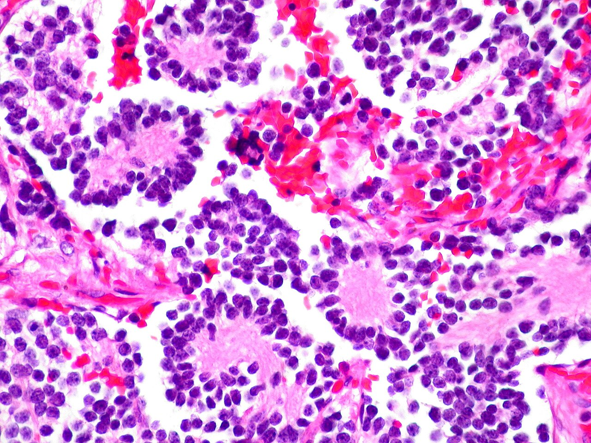
Neuroblast v zárodku tvorí katecholamíny, a väčšina neuroblastómov tiež. Ich odbúrané produkty – kyselina vanilmandľová (VMA) a homovanilová (HVA) – sú zvýšené v moči asi 90 % detí; slúžia na diagnózu aj na sledovanie liečby. Hypertenzia z katecholamínov býva miernejšia ako pri feochromocytóme. Niektoré nádory tvoria VIP (vazoaktívny intestinálny peptid) a dieťa má vodnaté hnačky. Asi u 2 % detí vznikne opsoklonus-myoklonus – rýchle chaotické pohyby očí a zášklby svalov; sú to protilátky namierené proti nádoru, ktoré skrížene reagujú s neurónmi mozočka, a syndróm býva pri lokalizovanom, prognosticky dobrom nádore.
Hmota v bruchu batoľaťa. Batoľa s veľkým bruchom, horúčkou, bolesťami kostí a neprospievaním má do dôkazu opaku neuroblastóm. Paravertebrálny nádor môže prerásť cez medzistavcový otvor do miešneho kanála (tvar presýpacích hodín) a ochrnúť dieťa; hrudný tlačí na priedušnicu a hornú dutú žilu. Diagnózu potvrdí VMA/HVA v moči, zobrazenie a biopsia.
Neuroblastóm metastázuje lymfou do uzlín a krvou do kostí, kostnej drene, pečene a kože; u dojčiat sú typické metastázy v pečeni a koži. Jeho správanie je však neobvykle rozptýlené – od nádoru, ktorý sám zmizne, po nádor, ktorý zabije napriek intenzívnej liečbe. Rozhodujú štyri veci, z ktorých sa zostaví riziková skupina (INRG):
| Faktor | Priaznivé | Nepriaznivé | Prečo |
|---|---|---|---|
| vek | dojča do 18 mesiacov | staršie dieťa | u dojčiat si nádor častejšie zachová program dozrievania a apoptózy |
| štádium | lokalizovaný nádor; štádium MS dojčiat (metastázy len v koži, pečeni a kostnej dreni) | rozsiahle metastázy (kosti) | MS často sám ustúpi (spontánna regresia) |
| histológia | bohatá Schwannova stróma, diferencujúce sa bunky, málo mitóz | nediferencovaný, veľa mitóz a rozpadu jadier | vyzretie = strata zhubnosti |
| genetika | bez amplifikácie MYCN | amplifikácia MYCN, mutácia ALK, straty 1p a 11q | MYCN poháňa delenie a blokuje dozrievanie |
MYCN = transkripčný faktor, ktorý v zárodku udržiava neuroblast v delení → amplifikácia (desiatky kópií génu, asi pätina nádorov) → nadbytok bielkoviny → bunka sa delí a nedozrieva → rýchly rast, metastázy, odolnosť → vysoké riziko
Pri nízkom riziku sa vylieči asi 95 % detí, pri vysokom len asi 40 %.
Amplifikácia, nie translokácia. Pri neuroblastóme sa MYCN nepresúva na iný chromozóm (ako EWSR1 pri Ewingovom sarkóme), ale zmnoží – vznikne veľa kópií génu. Patológ ho dokazuje metódou FISH, ktorá spočíta signály génu v jadre.
14.3.2Vyzrievanie: ganglioneuroblastóm a ganglioneuróm
Neuroblasty môžu v nádore dozrievať: zväčšia sa, pribudne im cytoplazma, vytvoria výbežky a nakoniec vyzerajú ako gangliové bunky (neuróny). Okolo nich sa zhromaždia Schwannove bunky, ktoré vytvoria vláknitú Schwannovu strómu (Obr. 14.3). Podľa toho, koľko nezrelej zložky ostalo, sa rozlišuje:
| Nádor | Čo v ňom je | Správanie | Kto a kde |
|---|---|---|---|
| neuroblastóm | len neuroblasty, málo strómy | zhubný, často vysokomalígny | dojčatá a malé deti; nadoblička |
| ganglioneuroblastóm | zrelá zložka (gangliové bunky v Schwannovej stróme) + ložiská neuroblastov | zhubný, ale lepšia prognóza | o niečo staršie deti |
| ganglioneuróm | len zrelé gangliové bunky a Schwannove bunky, bez neuroblastov | nezhubný | starší školáci aj dospelí; zadné mediastínum, retroperitoneum |
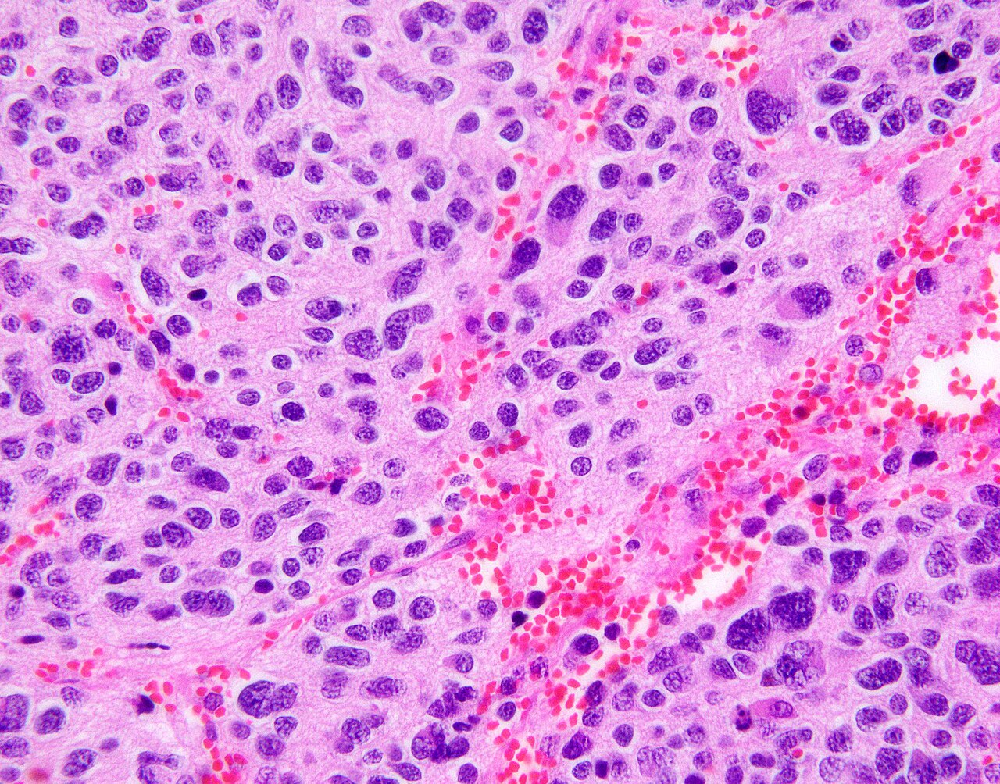
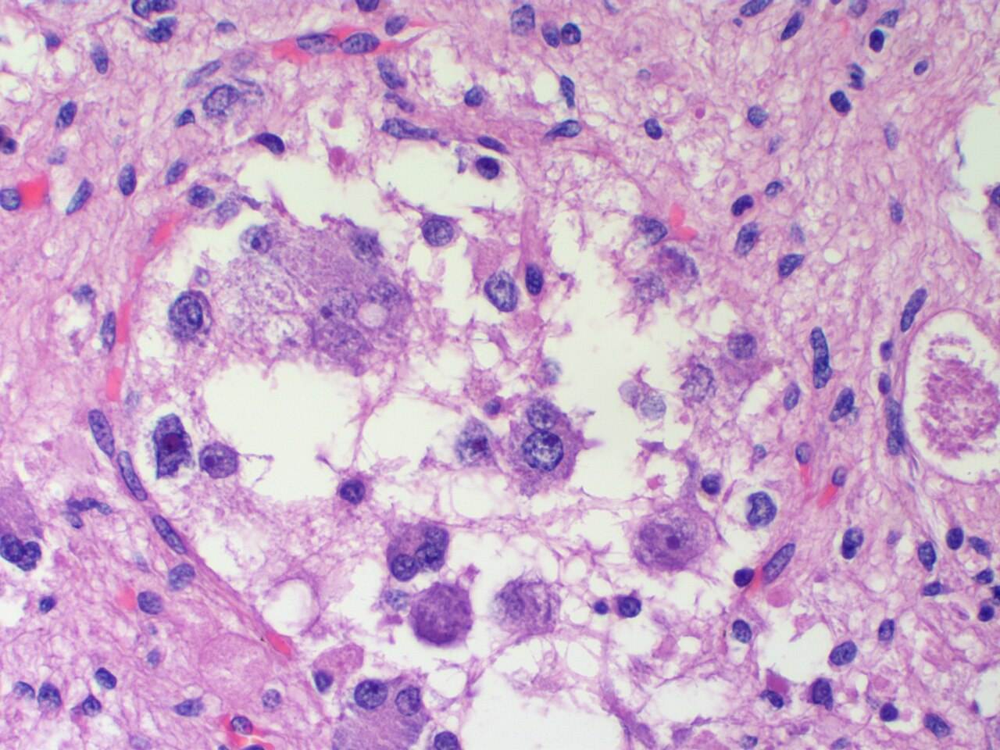
Ganglioneuróm môže vzniknúť dvoma cestami – de novo alebo vyzretím neuroblastómu, aj po chemoterapii. Je tuhý, žltobelavý a ostro ohraničený (Obr. 14.5); prejavuje sa len útlakom orgánov v mediastíne či retroperitoneu a stačí ho chirurgicky odstrániť (resekcia).
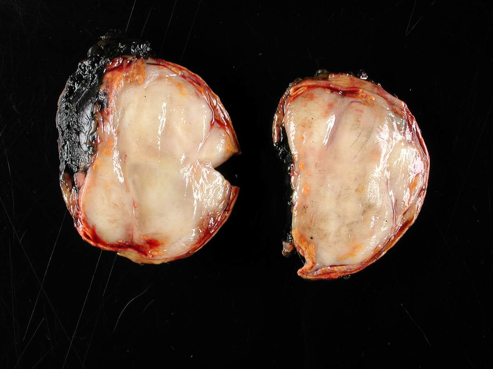
Vyzrievanie neuroblastómu je zároveň časová os tohto deja – od zárodočnej bunky po zrelý neurón:
| Fáza | Bunky | Čo z toho plynie |
|---|---|---|
| zárodok – dojča | nezrelé neuroblasty, rýchle delenie | neuroblastóm; u dojčaťa môže sám dozrieť alebo zaniknúť apoptózou |
| batoľa – škôlkar | časť buniek dozrieva, pribúda Schwannova stróma | ganglioneuroblastóm; liečba alebo sledovanie podľa rizika |
| školák – dospelý | len zrelé gangliové bunky | ganglioneuróm; resekcia, bez chemoterapie |
14.3.3Malé okrúhle modré bunky a PNET
Neuroblastóm je prototyp skupiny, ktorú patológ volá nádory z malých okrúhlych modrých buniek (angl. small round blue cell tumours): v H&E vyzerajú takmer rovnako, ale sú to rôzne choroby s inou liečbou. Rozhodne vek, miesto, imunohistochémia a genetika:
| Nádor | Typický pacient a miesto | Kľúčový marker | Genetika |
|---|---|---|---|
| neuroblastóm | dojča, nadoblička | synaptofyzín, PHOX2B; CD99− | amplifikácia MYCN |
| Ewingov sarkóm | adolescent, diafýza kosti, mäkké tkanivá | CD99 na membráne, NKX2-2 | fúzia EWSR1::FLI1 – t(11;22)(q24;q12) |
| rabdomyosarkóm | dieťa, hlava a krk, močovo-pohlavné ústrojenstvo | myogenín, desmín | fúzia PAX3/7::FOXO1 (alveolárny) |
| lymfóm, leukémia | každý vek | CD45 | podľa typu |
| nefroblastóm (blastém) | dieťa do 5 rokov, oblička | WT1 | WT1 a iné |
| meduloblastóm | dieťa, mozoček | synaptofyzín | skupiny WNT, SHH, 3, 4 |
Kedysi sa pod názvom primitívny neuroektodermový nádor (PNET) zhrňovali vysokomalígne nádory z malých okrúhlych buniek s náznakom neurálnej diferenciácie – v CNS („CNS-PNET“), v autonómnom nervovom systéme (neuroblastóm) a v kostiach a mäkkých tkanivách (periférny PNET). Dnes sa ukázalo, že periférny PNET (extraskeletálny Ewingov sarkóm) má rovnakú translokáciu EWSR1 ako Ewingov sarkóm, a je to teda ten istý nádor – nazýva sa Ewingov sarkóm (→ 13.7.5). Embryonálne nádory CNS WHO od roku 2016 delí podľa molekulových zmien (meduloblastóm podľa skupín, AT/RT podľa straty SMARCB1 a ďalšie), takže súborný názov stratil význam. „PNET“ ostal len v starších textoch.
14.4Paragangliómy a feochromocytóm
Druhá cesta sympatogónie vedie ku chromafinnej bunke – postgangliovému neurónu bez axónu, ktorý svoj neurotransmiter (katecholamíny) nevylieva do synapsy, ale do krvi ako hormón. Chromafinné bunky tvoria dreň nadobličky a drobné telieska pozdĺž autonómnych nervov – paragangliá. Nádory z nich sa volajú paragangliómy; ten v dreni nadobličky má historické meno feochromocytóm. Podľa toho, k akému nervovému systému paraganglion patrí, sú dve skupiny s odlišným obrazom: sympatikové (nadoblička, retroperitoneum, panva) tvoria katecholamíny, parasympatikové (hlava a krk) sú väčšinou hormonálne nemé.
Chromafinné bunky v hniezdach (Zellballen) obalené sustentakulárnymi bunkami. Feochromocytóm = paraganglióm nadobličky → katecholamíny → záchvatová hypertenzia; dôkaz metanefríny. Asi tretina dedičná (RET, VHL, NF1, SDHx). Benígny × malígny neplatí – metastáza je jediný istý dôkaz.
14.4.1Chromafinná bunka a jej hniezda
Paragangliá ležia na dvoch miestach. Sympatikové sú pozdĺž paravertebrálneho sympatikového kmeňa a prevertebrálnych pletení pri aorte (pri brušnej aorte je najväčšie – Zuckerkandlov orgán) a patrí k nim dreň nadobličky. Parasympatikové sú na hlave a krku pri vetvách IX. a X. hlavového nervu: karotické teliesko v rozvidlení krčnice, jugulotympanické teliesko a vagové paragangliá; sú to chemoreceptory, ktoré zachytia pokles kyslíka v krvi.
V paraganglióme bunky napodobňujú stavbu zdravého paraganglia. Hlavné (chromafinné) bunky – veľké, mnohouholníkové, s jemne zrnitou cytoplazmou plnou granúl s katecholamínmi – sú zoskupené do okrúhlych hniezd, ktoré sa po nemecky volajú Zellballen („guľky buniek“) a sú obklopené tenkými cievami (Obr. 14.6). Na obvode hniezd ležia sploštené sustentakulárne bunky, príbuzné Schwannovým. Z toho plynie IHC: hlavné bunky sú chromogranín+ a synaptofyzín+ (neuroendokrinný program) a na rozdiel od NET keratín negatívne; sustentakulárne bunky sú S100+ a SOX10+.
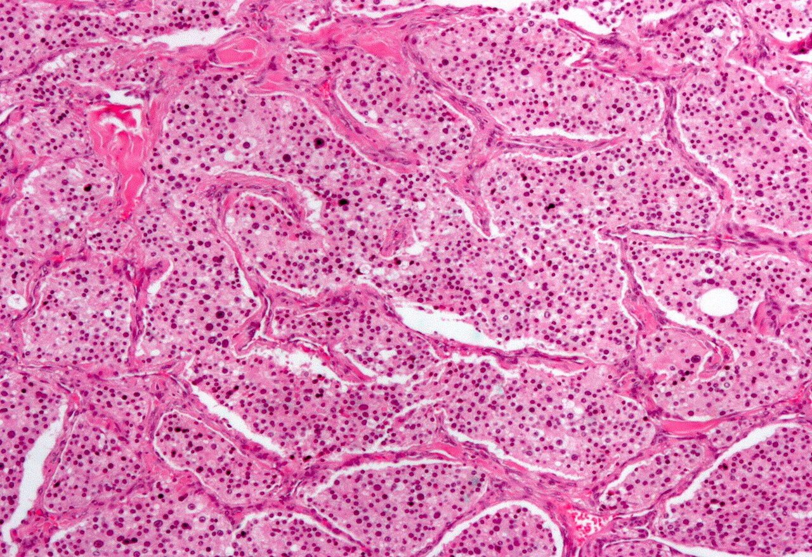
14.4.2Feochromocytóm: nádor, ktorý vyplavuje katecholamíny
Feochromocytóm je paraganglióm drene nadobličky (intraadrenálny sympatikový paraganglióm); rovnaký nádor mimo nadobličky je extraadrenálny paraganglióm. Najčastejšie sa objaví v strednom veku; dedičné formy v mladšom veku. Býva solitárny, asi 10 % je obojstranných.
- MA: ohraničený, opuzdrený uzol v nadobličke, pri operácii väčšinou 3–5 cm; mäkký, na reze sivoružový až hnedastý, s ložiskami krvácania; väčšie nádory jazvia a menia sa na pseudocysty (Obr. 14.7). Po ponorení do roztoku solí chrómu zhnedne – katecholamíny sa oxidujú na hnedý pigment. Odtiaľ meno: gr. phaios „tmavý“ + chróma „farba“.
- MI: hniezda veľkých chromafinných buniek s jemne zrnitou, bazofilnou až fialovou cytoplazmou (Obr. 14.8); jadrá môžu byť veľké a nepravidelné, a predsa to samo malignitu neznamená.
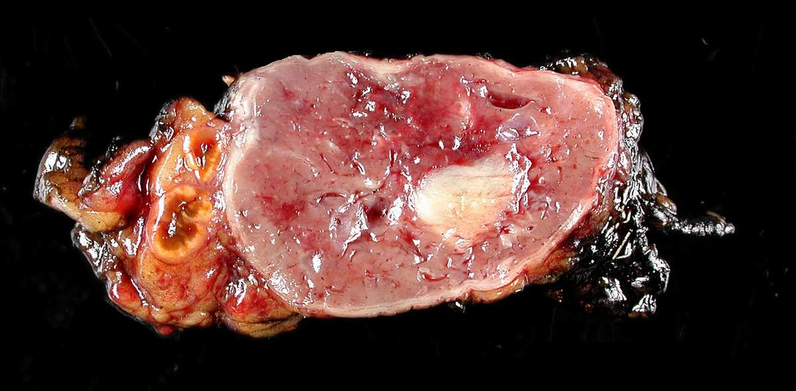
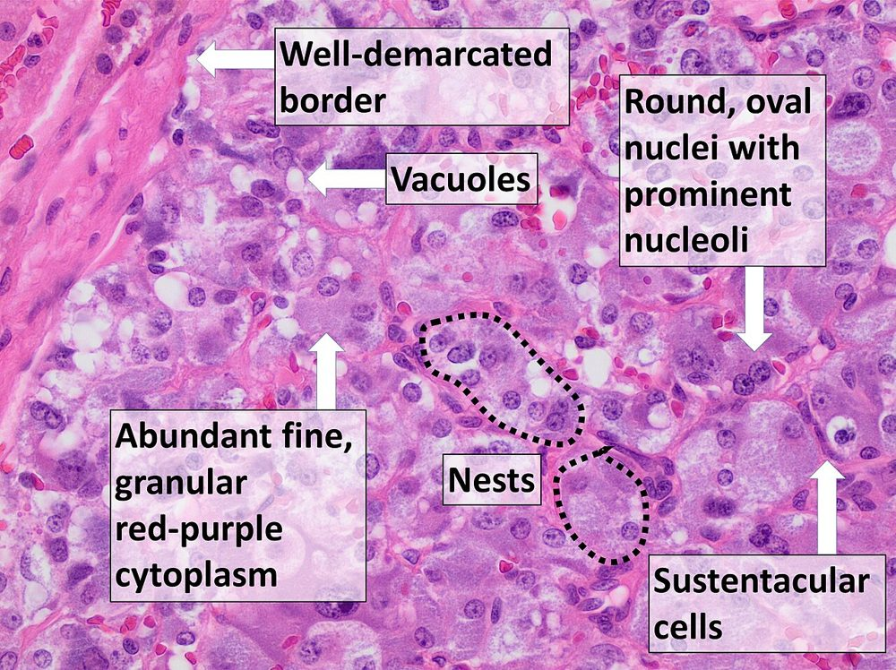
Väčšina feochromocytómov je funkčne aktívna – tvorí a vylieva katecholamíny, najmä noradrenalín, časť aj adrenalín; menšina je nemá.
nádor uvoľní dávku katecholamínov (pri tlaku na brucho, námahe, liekoch, spontánne) → noradrenalín cez receptory α₁ sťahuje arterioly → prudký vzostup tlaku → bolesť hlavy; adrenalín cez β₁ zrýchli srdce → búšenie, tachykardia; sympatikus → potenie, bledosť → po vyplavení tlak klesne → do ďalšieho záchvatu
Hypertenzia je teda záchvatová (paroxyzmálna), ale môže byť aj trvalá (častejšie u detí). Záchvat môže vyústiť do hypertenznej krízy s krvácaním do mozgu alebo zlyhaním srdca – niekedy je to prvý prejav nádoru. Feochromocytóm je preto jednou z príčin sekundárnej hypertenzie, ktorú treba hľadať pri mladom pacientovi a pri záchvatoch (→ 9.2.3 Tlak vo veľkom obehu).
Katecholamíny sa vylievajú len v záchvatoch, ale v nádore sa neustále premieňajú na metanefríny – preto sa merajú voľné metanefríny v plazme alebo v moči (citlivejšie ako samotné katecholamíny); doplnkovo VMA. Potom zobrazenie (CT, MR, funkčné zobrazenie).
Operácia feochromocytómu. Pred odstránením nádoru sa najprv podávajú blokátory α, až potom β. Keby sa začalo β-blokátorom, odpadne β₂ rozšírenie ciev svalov, ostane neutlmené α sťahovanie a tlak vyletí. Pri manipulácii s nádorom sa vylejú katecholamíny; po podviazaní žily tlak naopak náhle klesne.
Dĺžka záchvatu. Uvádza sa, že záchvaty pri feochromocytóme trvajú obvykle 15–20 minút a s rastom nádoru pribúdajú, predlžujú sa a zhoršujú. Záchvatovitý priebeh a jeho zhoršovanie sú doložené; konkrétne trvanie sa v použitých zdrojoch nenašlo.
14.4.3Paragangliómy hlavy a krku
Paragangliómy z parasympatikových paraganglií rastú pozdĺž IX. a X. hlavového nervu; najčastejší je paraganglióm karotického telieska, potom jugulotympanický a vagový. Na rozdiel od feochromocytómu sú väčšinou hormonálne nemé – parasympatikové paragangliá katecholamíny takmer netvoria. Prejavia sa ako pomaly rastúca, nebolestivá hmota na krku pri rozvidlení krčnice; jugulotympanický nádor tlačí na stredné ucho a hlavové nervy. Nádory majú veľa ciev a pri biopsii krvácajú. Starší názov chemodektóm odkazuje na to, že vychádzajú z chemoreceptorov.
Vysoká nadmorská výška. Uvádza sa, že u ľudí žijúcich vo vysokej nadmorskej výške, kde je v krvi trvalo menej kyslíka, karotické teliesko hypertrofuje a paragangliómy karotického telieska sú častejšie. Súvislosť s hypoxiou je známa, v použitých zdrojoch sa však nepodarilo doložiť jej rozsah.
14.4.4Dedičnosť a správanie
Paragangliómy majú zo všetkých nádorov najvyšší podiel dedičných foriem – asi tretina pacientov nesie zárodočnú mutáciu jedného z vyše 20 známych génov; zvyšok je sporadický. Dedičné sú častejšie u mladých, obojstranné a mnohopočetné (multicentrické). Preto sa genetické vyšetrenie odporúča každému pacientovi. Gény sa dajú zoskupiť podľa toho, čo pokazia:
| Skupina génov | Príklady | Čo sa v bunke stane | Syndróm |
|---|---|---|---|
| pseudohypoxia | SDHB, SDHD a ďalšie SDHx, VHL | porucha sukcinátdehydrogenázy → hromadí sa sukcinát → bunka „cíti“ hypoxiu → trvalo zapnutý HIF → rast a cievy | dedičné paragangliómy; VHL (feo asi u 30 %) |
| signál kinázy | RET, NF1 | trvalo zapnutý signál rastu (RET onkogén; bez neurofibromínu zapnutý RAS) | MEN2 (feo asi u 50 %); NF1 (< 1 %) |
Kedysi sa feochromocytómy delili na benígne a malígne podľa vzhľadu a platilo „pravidlo desiatok“ (10 % obojstranných, 10 % mimo nadobličky, 10 % zhubných, 10 % dedičných). Dnes (WHO od 4. vydania, 2017, a 2022) sa nedelia na benígne a malígne: každý paraganglióm môže metastázovať a jediným istým dôkazom je metastáza v mieste, kde paragangliá nie sú (uzliny, kosti, pečeň, pľúca). Riziko sa odhaduje skórovacími systémami (PASS, GAPP), stratou bielkoviny SDHB v IHC a veľkosťou. A dedičných je asi tretina, nie desatina.
Strata SDHB v imunohistochémii – bunky nádoru bez farbenia, okolité bunky farbené – prezradí poruchu ktoréhokoľvek génu SDHx (bez ohľadu na to, ktorá podjednotka je zasiahnutá) a zároveň vyššie riziko metastáz.
Po úplnom odstránení, kým nevzniknú komplikácie hypertenzie, je prognóza dobrá; pri metastázach prežije 5 rokov asi polovica pacientov.
14.5Nádory obalov periférnych nervov
Od buniek, ktoré pracujú ako neuróny, prechádzame k bunkám, ktoré neurónom slúžia. Periférny nerv je zväzok axónov obalených Schwannovými bunkami; medzi vláknami je jemné väzivo (endoneurium), zväzok obaľuje perineurium a celý nerv epineurium. Z týchto vrstiev vyrastá heterogénna skupina nádorov, ktoré sa podľa nich volajú nádory obalov nervov. Postihujú hlavové nervy (aj tie, ktoré ležia vnútri lebky), spinálne nervy a ich korene aj drobné nervy v koži a v stene orgánov – preto ich nájdeme v podkoží, medzi svalmi, v retroperitoneu, vo vnútorných orgánoch aj v miešnom kanáli. Podľa toho, ktorá bunka v nádore prevláda a ako nádor rastie, sú tri hlavné typy: schwannóm (len Schwannove bunky, rastie na okraji nervu), neurofibróm (zmes buniek, rastie vnútri nervu) a zhubný MPNST.
Schwannóm = len Schwannove bunky, opuzdrený, na okraji nervu → dá sa vylúpnuť, nezhubnie. Neurofibróm = zmes buniek z endoneuria, rastie vnútri nervu; plexiformný je pri NF1 a môže sa zmeniť na MPNST – high-grade sarkóm.
14.5.1Schwannóm – prototyp
Schwannóm (staršie neurilemóm alebo neurinóm) je nádor, v ktorom sa delí len jedna bunka – Schwannova; fibroblasty ani axóny sa doň nezapájajú. Aj v sporadických nádoroch v nej chýba merlín (sú zasiahnuté obe alely génu NF2, → 14.6.2): bunka prestane reagovať na dotyk susedov a delí sa ďalej. Nádor pritom ostáva nezhubný, po úplnom odstránení nerecidivuje a jeho premena na zhubný nádor sa neopisuje. Väčšina schwannómov je solitárna a sporadická a postihuje dospelých. Vzniknúť môže na ktoromkoľvek nerve so Schwannovými bunkami – od hlavových nervov (vestibulárny schwannóm) cez zadné, senzitívne korene miešnych nervov po drobné nervy hlavy, krku a končatín, steny tráviacej rúry či kosti. Nie je to jeden nádor, ale skupina: väčšinu tvorí konvenčný schwannóm. Ten sa podľa stavby môže javiť ako celulárny (husté bunky, mitózy – napodobní sarkóm, hoci je nezhubný), plexiformný (uzly pozdĺž vetiev nervu, ľahko sa zamení s plexiformným neurofibrómom) alebo mikrocystický.
- MA: sedí excentricky na okraji nervu, ktorý po jeho povrchu prebieha (Obr. 14.9); meria od milimetrov po niekoľko centimetrov; je oválny, hladký a tuhý; rezná plocha je sivobiela, v starých nádoroch s ložiskami penových makrofágov, krvácaním a cystami; od okolia ho ostro oddeľuje puzdro. Preto ho chirurg často odstráni bez prerušenia nervu.
- MI – malé zväčšenie: dva obrazy v jednom nádore (bifázický vzhľad). Antoni A – husté zväzky vretenovitých buniek; Antoni B – riedke bunky v bledej myxoidnej hmote s mikrocystami a penovými makrofágmi.
- MI – stredné zväčšenie: v oblastiach Antoni A sa jadrá radia do palisád; dva rady jadier oddelené pásom bezjadrových výbežkov tvoria Verocayovo teliesko (Obr. 14.10). Prečo: Schwannove bunky si zachovávajú sklon zarovnať sa pozdĺž axónu ako v zdravom nerve – v nádore bez axónu sa zarovnajú navzájom.
- Degenerácia: v starých, pomaly rastúcich nádoroch krvácanie, hyalínne zhrubnuté cievy, pseudocysty a veľké tmavé jadrá – starý schwannóm (angl. ancient schwannoma). Atypia je tu stopou starnutia nádoru, nie malignity.
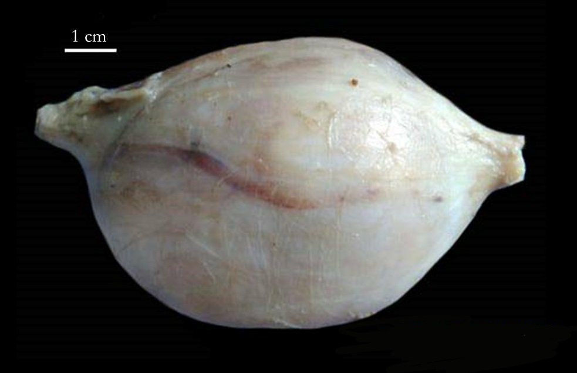
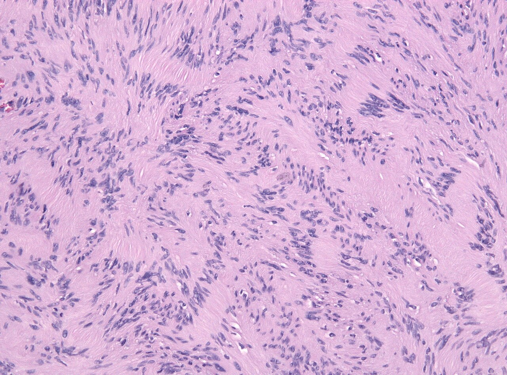
S100 a SOX10 silno a difúzne v takmer všetkých bunkách (pri neurofibróme len v časti buniek); okolo buniek kolagén IV.
Najznámejší je vestibulárny schwannóm (staršie „akustický neurinóm“) z vestibulárnej časti VIII. hlavového nervu. Rastie najprv vo vnútornom zvukovode: tlačí na kochleárnu časť nervu a pacient pozoruje jednostrannú poruchu sluchu, tinitus a závraty. Keď sa rozšíri do mostovo-mozočkového uhla, tlačí na V. a VII. nerv, mozoček a mozgový kmeň a môže uzavrieť cesty likvoru (hydrocefalus). Jednostranný je takmer vždy sporadický; obojstranný vestibulárny schwannóm je definujúcim znakom dedičného syndrómu NF2 (→ 14.6.2). Miešny schwannóm leží vnútri tvrdej pleny, ale mimo miechy, a spôsobuje koreňovú bolesť alebo útlak miechy.
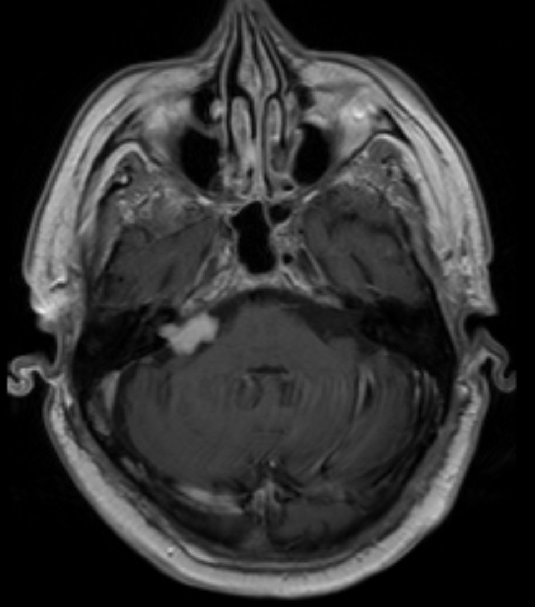
Jednostranná nedoslýchavosť dospelého. Pri pomaly sa zhoršujúcom sluchu na jednom uchu, s tinitom, je magnetická rezonancia s kontrastom prvé vyšetrenie, ktoré vylúči vestibulárny schwannóm (Obr. 14.11). Malý nádor sa sleduje alebo ožiari, väčší sa operuje – čím skôr, tým väčšia šanca zachovať lícny nerv a sluch.
Kedysi sa melanotický schwannóm – nádor zo Schwannových buniek, ktoré tvoria melanín, najčastejšie na miešnych nervových koreňoch – považoval za variant schwannómu, teda za nezhubný. Dnes sa nazýva malígny melanotický nádor obalov nervov (MMNST): recidivuje a metastázuje. Časť pacientov má Carneyho komplex (zárodočná mutácia PRKAR1A) a dôkaz tejto mutácie pomáha diagnóze. Od konvenčného schwannómu ho odlišuje pigment a iná genetika; od melanómu obraz a umiestnenie na nerve.
14.5.2Neurofibróm – čím sa líši od schwannómu
Neurofibróm je najčastejší nezhubný nádor obalov nervu. Od prototypu sa líši v troch veciach, ktoré všetky vyplývajú z toho, že nevzniká na okraji nervu, ale z endoneuria – vnútri zväzku:
- Zloženie. Nádorové sú len Schwannove bunky, no medzi ne sa zapoja fibroblasty, perineurálne bunky a žírne bunky, všetko v myxoidnej alebo kolagénovej hmote; v strede nádoru ostávajú prechádzajúce axóny. Schwannove markery sú preto pozitívne len v časti buniek.
- Rast. Nádor nerv vretenovito zhrubne zvnútra, vlákna nervu prechádzajú cez neho. Vyrezať ho bez obetovania nervu väčšinou nejde – opak schwannómu.
- Puzdro chýba. Je ohraničený, ale neopuzdrený; na reze lesklý, belavý, mäkší.
Podľa toho, kde a ako rastie, sú typy s rôznym významom:
| Typ | Kde a ako | Čo z neho plynie |
|---|---|---|
| lokalizovaný kožný (najčastejší) | mäkká papula alebo uzlík v koži a podkoží, často solitárny a sporadický; mnohopočetné kožné neurofibrómy sprevádzajú NF1 (→ 14.6.1) | prakticky vždy nezhubný; solitárny neznamená neurofibromatózu |
| difúzny | plošne prerastá kožu a podkožie pozdĺž väziva | nezhubný, kozmetický problém |
| intraneurálny | vretenovité zhrubnutie väčšieho nervu | môže sa zmeniť na MPNST |
| plexiformný | rastie vnútri mnohých zväzkov a vetiev nervu → hrubé spletité povrazce | prakticky diagnostický pre NF1; prekurzor MPNST |
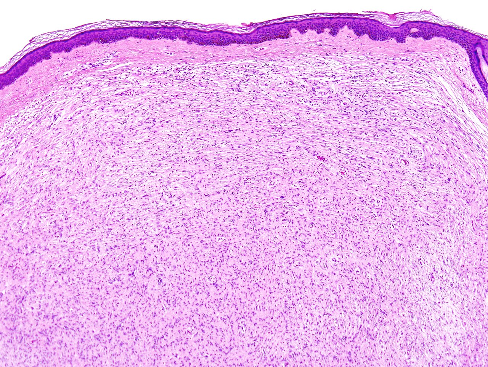
Pri NF1 môže plexiformný neurofibróm prerásť celú končatinu a jej mäkké tkanivá – končatina zhrubne a koža nad ňou visí v záhyboch, čo sa opisuje ako elephantiasis neuromatosa.
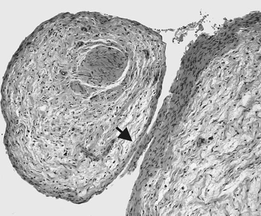
Schwannóm × neurofibróm sa pletú, lebo oba sú z buniek obalov a oba sú S100+. Rozhodne miesto voči nervu (okraj × vnútri), puzdro, zloženie (len Schwannove bunky × zmes) a obraz (Antoni A/B a Verocay × myxoidné pozadie a nepravidelné vlnité jadrá). Prakticky: schwannóm sa dá vylúpnuť, neurofibróm nie; schwannóm nezhubne, plexiformný neurofibróm áno.
14.5.3MPNST – zhubný nádor obalov nervov
MPNST (skratka anglického názvu; po slovensky malígny nádor obalov periférneho nervu) je high-grade vretenobunkový sarkóm, ktorý vyrastá z nervu. Lokálne agresívne rastie a metastázuje krvou, najčastejšie do pľúc; prognóza je zlá.
- Z neurofibrómu, najmä plexiformného alebo intraneurálneho – nie zo schwannómu. V Schwannovej bunke, ktorá už nemá funkčný neurofibromín (oba zásahy NF1, → 14.6.1), pribudnú ďalšie zásahy: strata CDKN2A (brzda bunkového cyklu) a gény komplexu, ktorý udržiava chromatín zbalený (PRC2). Bunka stratí Schwannov program a začne sa správať ako sarkóm.
- De novo v nerve bez predchádzajúceho nádoru.
- Po ožiarení, s odstupom rokov, v ožiarenom poli.
- Viac ako polovica MPNST vzniká u ľudí s NF1; ich celoživotné riziko je 8–13 %.
- MA: na začiatku neohraničené vretenovité zhrubnutie nervu; neskôr veľký, infiltratívne rastúci nádor v mäkkých tkanivách končatín (stehno, zadok, rameno), trupu, hlavy a krku alebo paraspinálne, na pohľad nerozoznateľný od iného sarkómu.
- MI: zväzky atypických vretenovitých buniek, striedanie bunkovejších a riedkych oblastí, bunky sa zhusťujú okolo ciev; atypia a pleomorfia jadier, veľa mitóz, nekrózy lemované palisádou nádorových buniek, infiltratívny okraj (Obr. 14.14).
- IHC: S100 a SOX10 len ložiskovo alebo vôbec – stopa straty Schwannovho programu; preto sa diagnóza opiera o väzbu na nerv, o NF1 v anamnéze alebo o neurofibróm v nádore.
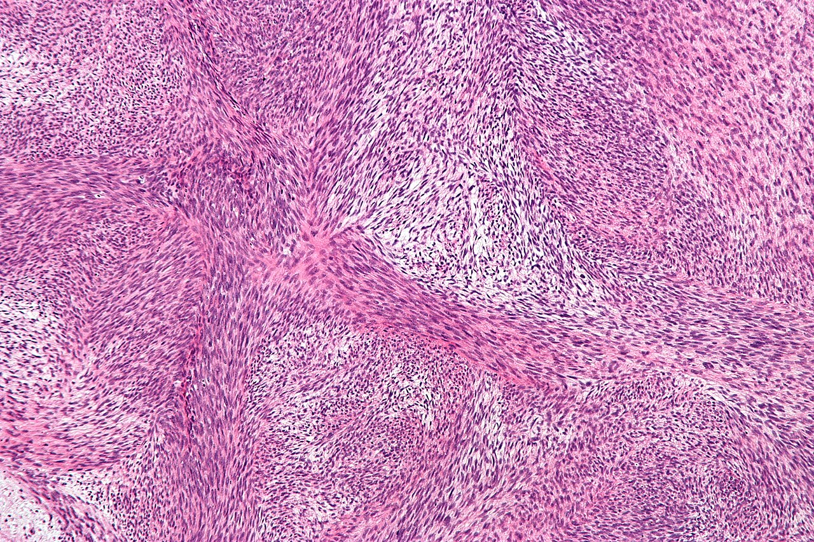
Kedysi sa tento nádor nazýval malígny schwannóm, neurofibrosarkóm alebo neurogénny sarkóm. Dnes platí jednotný názov MPNST. Meno „malígny schwannóm“ bolo zavádzajúce, lebo naznačovalo, že vzniká zo schwannómu – v skutočnosti vzniká z neurofibrómu alebo de novo a schwannóm zhubne nezvrháva.
Bolestivý a rastúci neurofibróm pri NF1. Ak u pacienta s NF1 plexiformný neurofibróm začne rýchlo rásť, bolí alebo spôsobí výpadok nervu, treba myslieť na premenu na MPNST: zobrazenie (MR, PET) a biopsia z najaktívnejšej časti. Liečba je široká resekcia ako pri inom sarkóme (→ 13.4 Ako sa sarkóm bude správať).
14.5.4Zriedkavé nádory obalov nervov
Okrem troch hlavných typov sa z obalov nervov odvodzujú ďalšie, zriedkavé nádory; líšia sa tým, ktorej bunke obalu sa podobajú. Perineurióm je nezhubný nádor zložený len z buniek perineuria – tenkých vretenovitých buniek, ktoré v zdravom nerve oddeľujú zväzok od okolia; Schwannove markery sú v ňom negatívne.
Nádor z granulárnych buniek tvoria veľké mnohouholníkové bunky s jemne zrnitou eozinofilnou cytoplazmou. Sú S100 pozitívne, a preto sa považujú za Schwannove; zrná v cytoplazme sú nahromadené lyzozómy – v časti nádorov je mutácia génov pomocných podjednotiek protónovej pumpy lyzozómov (ATP6AP1, ATP6AP2), takže lyzozómy nevedia okysliť a rozkladať obsah (Obr. 14.15). Väčšina je nezhubná a malá; najčastejšie rastie v koži, v ústnej dutine (jazyk) a v stene tráviacej rúry. Zriedka sa vyskytne malígny nádor z granulárnych buniek.
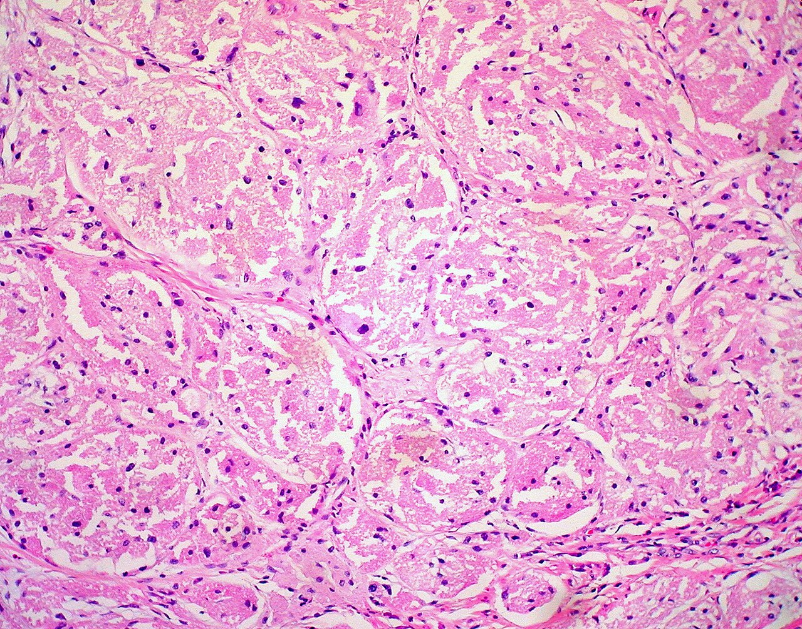
14.6Neurofibromatózy a schwannomatózy
Nádory obalov nervov vznikajú vo väčšine prípadov sporadicky, ale časť z nich je prejavom dedičného syndrómu, pri ktorom má človek jednu alelu supresorového génu poškodenú už od narodenia. Podľa toho, ktorý gén je postihnutý, sú to dve celkom odlišné choroby: neurofibromatóza 1. typu (NF1, neurofibrómy a kožné znaky) a skupina schwannomatóz (NF2 a ďalšie gény, schwannómy). Obe ilustrujú model dvoch zásahov (→ 10.5.3 Supresorové gény): nádor vznikne tam, kde druhú alelu zasiahne náhodná mutácia.
Jedna alela je poškodená od narodenia; nádor vznikne, kde druhú zasiahne náhoda. Bez neurofibromínu je RAS zapnutý → NF1: neurofibrómy, kožné znaky, MPNST. Bez merlínu chýba kontaktná inhibícia → NF2-SWN: obojstranné vestibulárne schwannómy.
14.6.1Neurofibromatóza 1. typu
Postihuje asi jedného človeka z 2 600–3 000 a dedí sa autozómovo dominantne; asi polovica pacientov však poruchu od rodiča nezdedila – mutácia vznikla nanovo. Podľa lekára, ktorý ju opísal, sa jej hovorí aj von Recklinghausenova choroba. Zodpovedný gén NF1 leží na 17q11.2 a kóduje bielkovinu neurofibromín.
neurofibromín = GTPáza aktivujúca bielkovina → urýchľuje premenu aktívneho RAS-GTP na neaktívny RAS-GDP → bez neho ostáva RAS zapnutý → trvalý signál na delenie (dráha RAF–MEK–ERK a ďalšie) → Schwannova bunka s oboma zasiahnutými alelami sa delí → neurofibróm; ďalšie zásahy (CDKN2A, PRC2) → MPNST
Prvý zásah má pacient v každej bunke; nádor vznikne až tam, kde náhodná mutácia vyradí aj druhú alelu (→ 10.5.3). Preto sa neurofibrómy objavujú postupne, v rôznom čase a na rôznych miestach.
Klinický obraz vychádza z toho, že NF1 pracuje v bunkách lišty (melanocyty, Schwannove bunky), ale aj v kosti a v gliách. Diagnózu dnes dáva kombinácia znakov podľa revidovaných kritérií z roku 2021:
- kávové škvrny (café-au-lait) – svetlohnedé ploché škvrny, 6 a viac (Obr. 14.16),
- pehy v podpazuší (axilárne) a v slabinách,
- neurofibrómy – dva a viac kožných (u dospelého často stovky, Obr. 14.18) alebo jeden plexiformný; vznikajú aj na hlavových a spinálnych nervoch a v stene orgánov,
- Lischove uzlíky – drobné hnedé melanocytové hamartómy dúhovky, ktoré zrak neohrozujú (Obr. 14.17),
- glióm zrakovej dráhy (pilocytický astrocytóm, → 14.7.2),
- typická kostná lézia – zakrivenie a pakĺb tíbie, dysplázia kridla kosti klinovej; častá je aj skolióza,
- dôkaz patogénneho variantu NF1 alebo rodič s NF1.
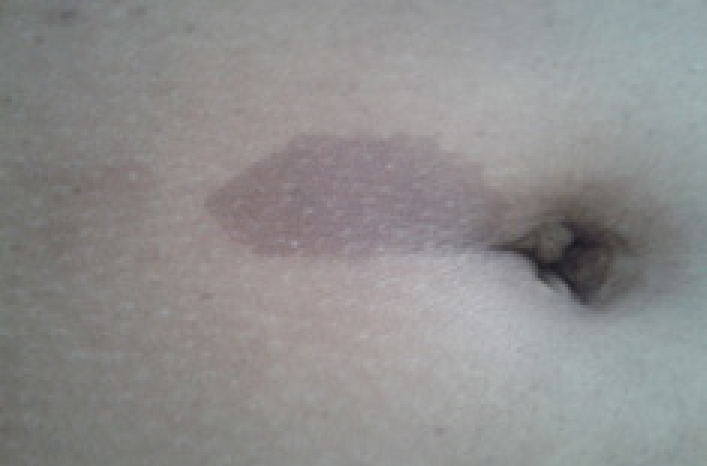
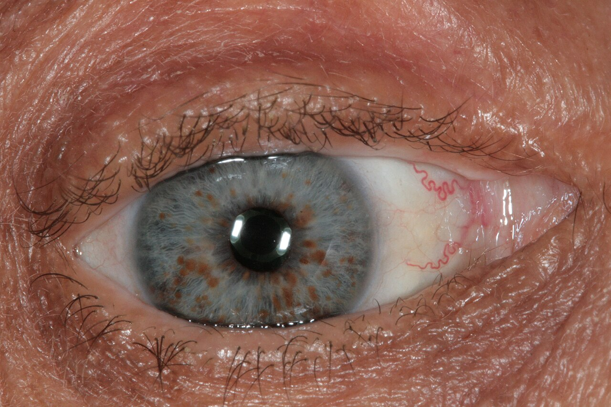
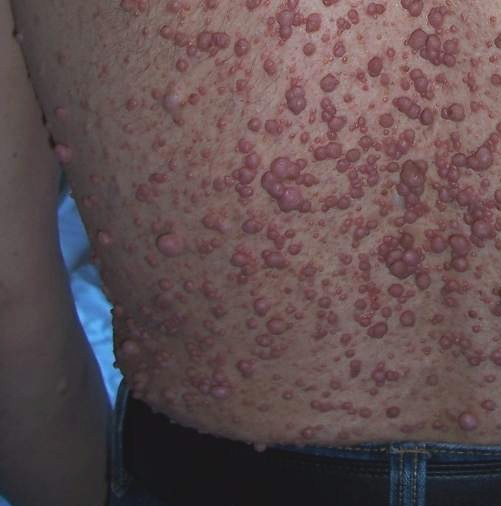
Mnohopočetné neurofibrómy neznamenajú automaticky NF1. Aj človek bez syndrómu môže mať niekoľko sporadických kožných neurofibrómov. NF1 sa diagnostikuje podľa kombinácie znakov (kritériá 2021), nie podľa počtu nádorov.
Pacienti s NF1 majú zvýšené riziko ďalších nádorov, väčšinou z buniek, v ktorých neurofibromín tlmí RAS: MPNST (→ 14.5.3), gliómy (zraková dráha, mozoček a kmeň u detí), GIST (→ 13.6), feochromocytóm, neuroendokrinné nádory duodéna (typicky somatostatinóm) a ganglioneuróm.
Dieťa s kávovými škvrnami. Šesť a viac kávových škvŕn u dieťaťa vedie k cielenému pátraniu po ďalších znakoch NF1 (pehy v podpazuší, Lischove uzlíky pri vyšetrení očí, kostné zmeny) a k pravidelným kontrolám – očí kvôli gliómu zrakovej dráhy, tlaku krvi kvôli feochromocytómu, chrbtice kvôli skolióze. Pri rýchlo rastúcom alebo bolestivom plexiformnom neurofibróme treba vylúčiť MPNST.
14.6.2NF2 a ďalšie schwannomatózy
Druhú skupinu tvoria syndrómy, pri ktorých vznikajú mnohopočetné schwannómy a meningiómy, nie neurofibrómy. Najznámejší je spôsobený mutáciou génu NF2 na 22q12; jeho bielkovina merlín spája cytoskelet s bunkovou membránou a sprostredkuje kontaktnú inhibíciu – keď sa bunky dotknú, prestanú sa deliť. Bez merlínu bunka tento signál stratí a delí sa ďalej.
- obojstranné vestibulárne schwannómy (Obr. 14.19) – definujúci znak; prejavia sa obojstrannou stratou sluchu, typicky v mladej dospelosti,
- ďalšie schwannómy hlavových a miešnych nervov,
- meningiómy (→ 14.7.3) a ependymómy miechy.
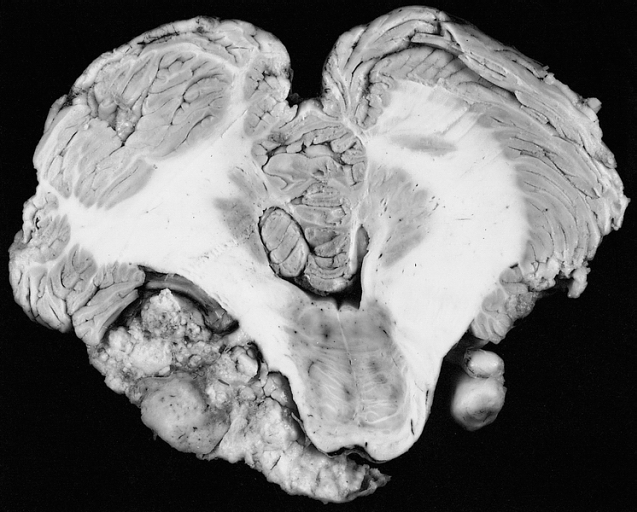
Kedysi sa syndróm volal neurofibromatóza 2. typu, hoci s NF1 nemá spoločný gén ani typický nádor (neurofibrómy pri ňom nie sú charakteristické); spoločné meno viedlo k zámenám. Dnes (medzinárodný konsenzus 2022) sa názov „neurofibromatóza 2“ nepoužíva: syndróm sa volá NF2-related schwannomatosis (NF2-SWN) a ďalšie dedičné schwannomatózy sa pomenúvajú podľa génu – SMARCB1, LZTR1, 22q-related. Názov tak hovorí, aký nádor čakať (schwannóm) a ktorý gén je poškodený.
Schwannomatóza bez mutácie NF2 (najčastejšie SMARCB1 alebo LZTR1) sa prejavuje mnohopočetnými, často bolestivými schwannómami periférnych a miešnych nervov, ale bez obojstranných vestibulárnych schwannómov.
14.7Nádory centrálneho nervového systému – prehľad
Z nervovej trubice vznikajú neuróny, glia (astrocyty, oligodendrocyty, ependým) a v okolí mozgu sú obaly z lišty (meningy). Nádory CNS sa podľa toho delia na gliómy (z glie), neurónové a zmiešané gliovo-neurónové nádory, embryonálne nádory (z nezrelých prekurzorov), nádory plexus chorioideus a nádory obalov (meningióm); patria sem aj nádory hlavových nervov (schwannóm, → 14.5.1). Podrobne ich rozoberá patológia CNS; tu ide o pravidlá, ktoré platia pre všetky.
Nádor CNS zabije polohou a tlakom; mimo CNS takmer nemetastázuje, šíri sa likvorom. Grade 1–4 v rámci typu, diagnóza integrovaná (histológia + IDH, 1p/19q, H3). Edém → ↑ tlak → ischémia → edém ⟳.
14.7.1Čím sú nádory CNS iné
Nádory CNS sa od ostatných líšia tromi vlastnosťami, ktoré vyplývajú z prostredia, v ktorom rastú: z pevnej lebky, z toho, že mozog nemá lymfatické cievy, a z toho, že sa pod rovnakým vzhľadom skrýva viac chorôb.
Pevná lebka – poloha je dôležitejšia ako dignita. Lebka sa nedá roztiahnuť, takže každý nový objem zvýši tlak. Aj pomaly rastúci nádor nízkeho stupňa preto môže utlačiť kmeň alebo uzavrieť cesty likvoru a zabiť. Najväčšie nebezpečenstvo však nevychádza z nádoru samého, ale z edému okolo neho:
nádor tvorí cievy s porušenou hematoencefalickou bariérou (VEGF) → z ciev uniká tekutina do bielej hmoty → vazogénny edém → objem v lebke stúpa → ↑ intrakraniálny tlak → ↓ perfúzny tlak mozgu (stredný arteriálny tlak − intrakraniálny tlak) → ischémia → poškodené bunky a cievy → ďalší edém ⟳
Bod zvratu: herniácia – mozog sa vtlačí pod falx, cez zárez tentória alebo do foramen magnum a utlačí kmeň. Zlomiť kruh sa dá kortikoidmi (utesnia cievy a zmenšia edém), odľahčením likvoru a resekciou.
Z toho istého tlaku plynú aj príznaky: intrakraniálna hypertenzia (bolesť hlavy, nauzea, zvracanie), dráždivé príznaky z kôry (epileptický záchvat), výpady podľa miesta (obrny, porucha reči či zraku) a zmena osobnosti pri čelovom laloku.
Bez lymfatických ciev – nádor ostáva v CNS. Bunky gliómu takmer nikdy neprejdú do krvného obehu a mimo CNS sa dostanú len výnimočne, napríklad cez ventrikulo-peritoneálny skrat. Šíria sa však likvorom po povrchu mozgu a miechy. Opačným smerom cesta funguje dobre: u dospelých je najčastejším nádorom mozgu metastáza iného nádoru.
Viac chorôb pod jedným vzhľadom – integrovaná diagnóza. Grade 1–4 sa určuje v rámci typu a niektoré typy majú len jeden stupeň: glioblastóm a meduloblastóm sú vždy grade 4, pilocytický astrocytóm grade 1. Od roku 2021 sa grade píše arabskými číslicami a diagnóza je integrovaná – spája histológiu, grade a molekulové zmeny (IDH, kodelécia 1p/19q, histón H3, metylačný profil), lebo pod jedným starým histologickým menom sa skrývalo viac chorôb s inou prognózou.
Kto nádor CNS dostane a kde, závisí od veku – u dieťaťa a u dospelého sa delia iné bunky:
| Deti (najmä do 5 rokov) | Dospelí (vrchol po 65 rokoch) | |
|---|---|---|
| kde | častejšie zadná jama – mozoček a kmeň pod tentóriom | častejšie hemisféry nad tentóriom |
| čo | pilocytický astrocytóm, meduloblastóm, ependymóm | metastáza iného nádoru (najčastejšia), glioblastóm, meningióm |
Príčina väčšinou nie je známa. Zo zvonku je doložené len ionizujúce žiarenie – po ožiarení hlavy v detstve sa nádor môže objaviť s odstupom 5–25 rokov; asi desatina nádorov vzniká pri dedičných syndrómoch (→ 14.6). Predstupeň typu dysplázie ani štádium in situ v CNS nepoznáme, takže skríning tu nemá čo hľadať.
14.7.2Gliómy
Gliómy sú najčastejšie primárne nádory CNS. Podľa toho, ktorej glii sa podobajú, sú astrocytové, oligodendrogliové a ependýmové; u dospelých ich dnes delí najmä mutácia génu IDH (izocitrátdehydrogenáza) a kodelécia 1p/19q, u detí iné zmeny (BRAF, histón H3):
| Nádor | Kto a kde | Genetika | Grade | Obraz a prognóza |
|---|---|---|---|---|
| glioblastóm | dospelí 60–80 r., hemisféry; vyše polovice gliómov dospelých | IDH bez mutácie (wildtype) | 4 | nekrózy s pseudopalisádami, proliferácia ciev; medián prežitia okolo 15 mesiacov |
| astrocytóm IDH-mutovaný | 30–50 r., hemisféry | mutácia IDH1/2 | 2–4 | difúzne infiltruje; bez liečby postupne prechádza do vyššieho stupňa |
| oligodendroglióm | dospelí, hemisféry | IDH + kodelécia 1p/19q | 2–3 | „volské oká“ (svetlé halo okolo jadra), kalcifikácie; lepšia prognóza |
| pilocytický astrocytóm | deti; mozoček, zraková dráha (NF1) | BRAF | 1 | ohraničený, s cystou; Rosenthalove vlákna; po resekcii vyliečený |
| ependymóm | deti IV. komora; dospelí miecha | podľa miesta | 2–3 | perivaskulárne pseudorozety; hydrocefalus |
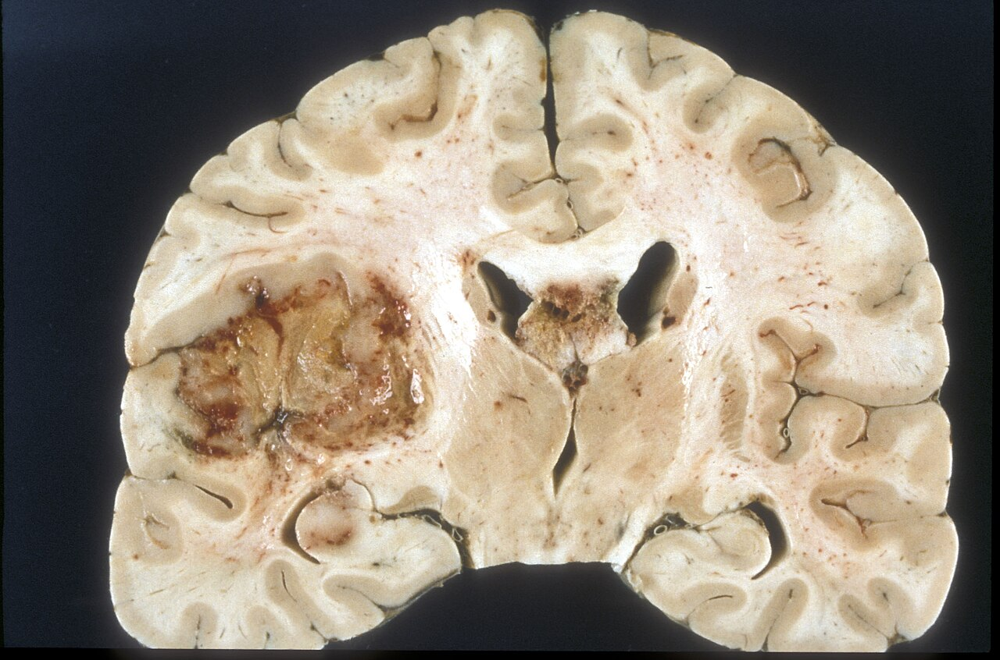
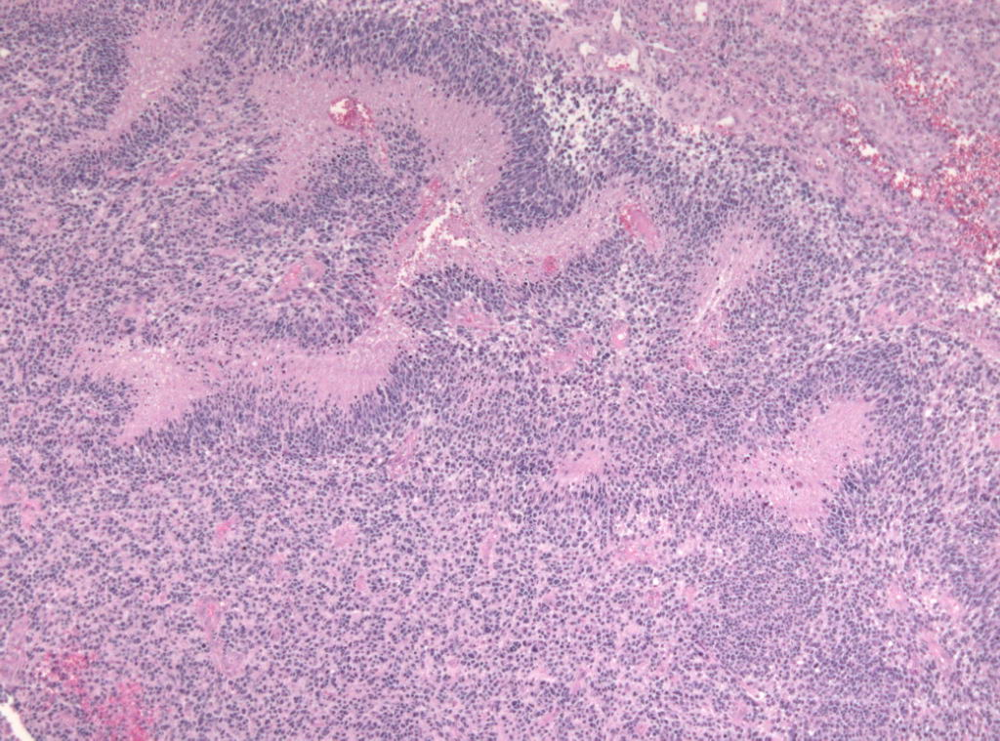
- MA: pestrý nádor hemisféry – žltkasté nekrózy, krvácanie, sivé živé okraje; hranica s mozgom nie je ostrá (Obr. 14.21); nádor môže prerásť cez trámec do druhej hemisféry („motýľovitý“ glioblastóm).
- MI: husté atypické astrocytové bunky; nekrózy lemované palisádou nádorových buniek (bunky utekajú od hypoxického stredu) a proliferácia ciev (hypoxia → VEGF) (Obr. 14.22). Tieto dva znaky stačia na grade 4.
- Prečo ho nejde vyrezať: jednotlivé bunky infiltrujú bielu hmotu centimetre za viditeľnou hranicou – recidíva vznikne na okraji resekcie.
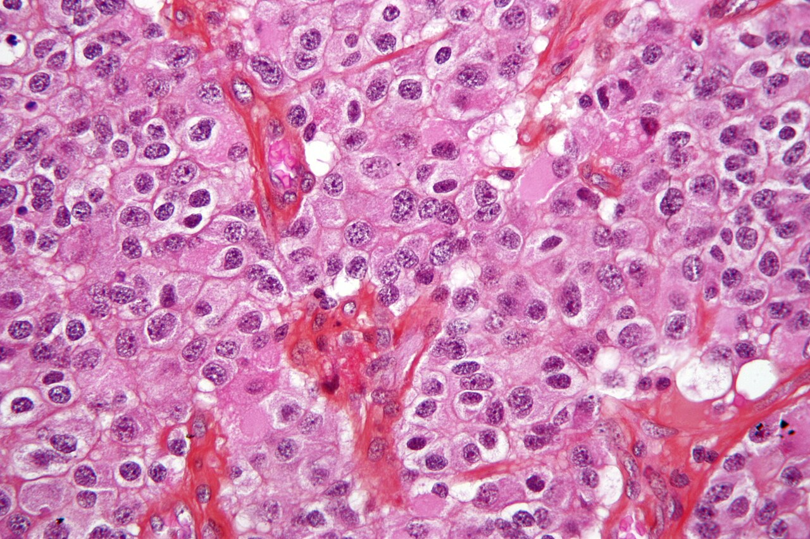
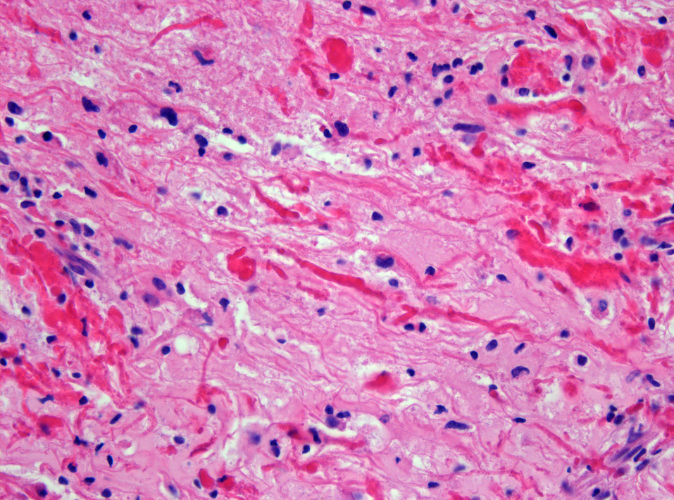
Ependymóm vychádza z výstelky komôr a centrálneho kanála; u detí najčastejšie vypĺňa IV. komoru a uzaviera odtok likvoru (hydrocefalus), u dospelých je najčastejším gliómom miechy. Bunky sa radia okolo ciev a ich výbežky vytvoria bezjadrový lem – perivaskulárnu pseudorozetu (Obr. 14.25).
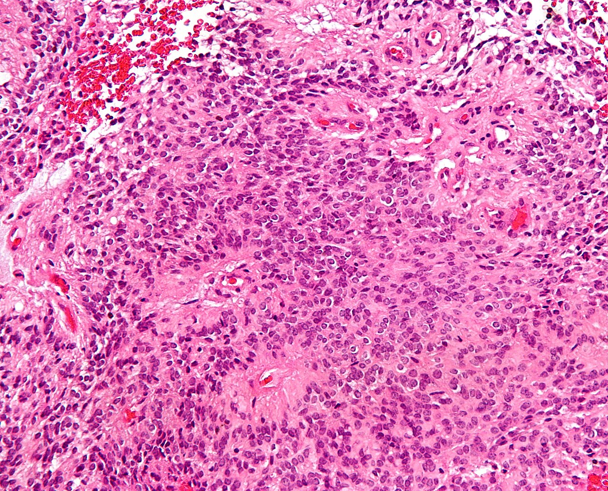
Kedysi sa gliómy delili len podľa vzhľadu (astrocytóm, oligodendroglióm, oligoastrocytóm) a grade sa písal rímskymi číslicami. Dnes (WHO 2016 a 2021) sa diagnóza skladá z histológie a molekulových zmien: glioblastóm je len nádor bez mutácie IDH; astrocytóm s mutáciou IDH je samostatná choroba s lepšou prognózou, aj keď má grade 4; „oligoastrocytóm“ zanikol, lebo genetika rozhodne o jednom alebo druhom. Grade sa píše arabsky (CNS WHO grade 1–4) a určuje sa v rámci typu.
Prvý epileptický záchvat dospelého. Nový záchvat u dospelého bez inej príčiny vedie k magnetickej rezonancii mozgu. Ak ukáže nádor, biopsia alebo resekcia rozhodne o type; správa patológa obsahuje integrovanú diagnózu (napr. „astrocytóm, IDH-mutovaný, CNS WHO grade 2“) – od nej sa odvíja ožarovanie a chemoterapia.
14.7.3Meningióm, embryonálne nádory a ďalšie
Okrem gliómov sú v CNS ďalšie skupiny, ktoré sa líšia bunkou pôvodu: z obalov mozgu (meningióm – bunky z lišty), z nezrelých prekurzorov (embryonálne nádory) a z neurónov a plexus chorioideus.
Meningióm vzniká z meningoteliálnych buniek arachnoidey (deriváty lišty). Je to pomaly rastúci nádor dospelých, častejší u žien, ktorý sedí na tvrdej plene, najčastejšie nad konvexitou pri veľkých žilových splavoch, a mozog odtláča, nie infiltruje (Obr. 14.26). Väčšina je grade 1 a dá sa odstrániť; zriedkavý anaplastický meningióm (grade 3) infiltruje a recidivuje. Pod mikroskopom tvoria bunky víry a v nich sú vrstvené zvápenatené psamómové telieska (Obr. 14.27; → 2.6.5 Soli vápnika). Problémom nie je zhubnosť, ale poloha – meningióm pri kmeni alebo na spodine lebky sa vyrezáva ťažko.
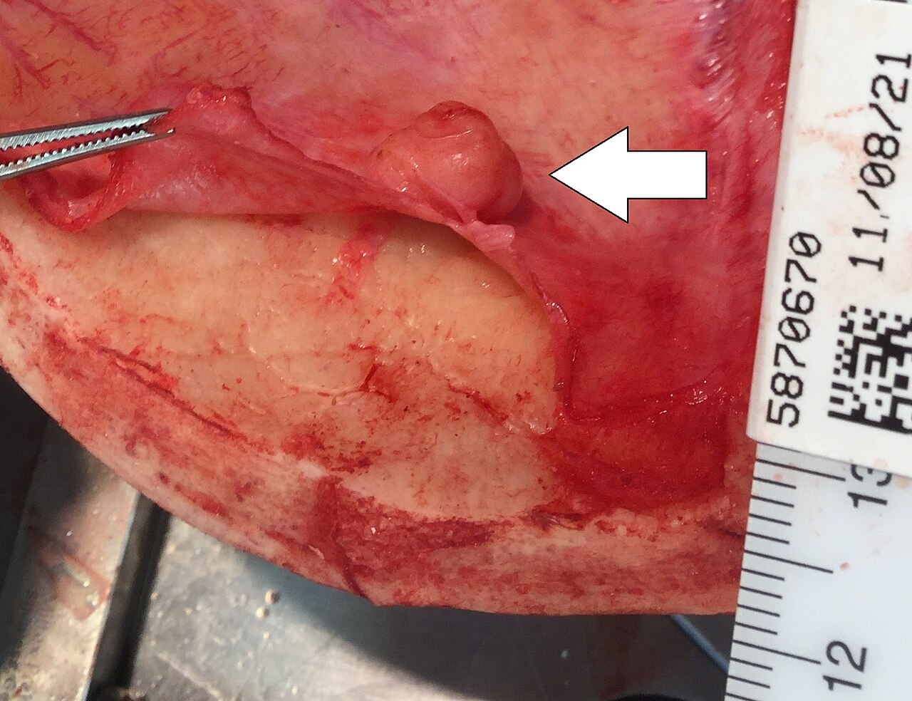
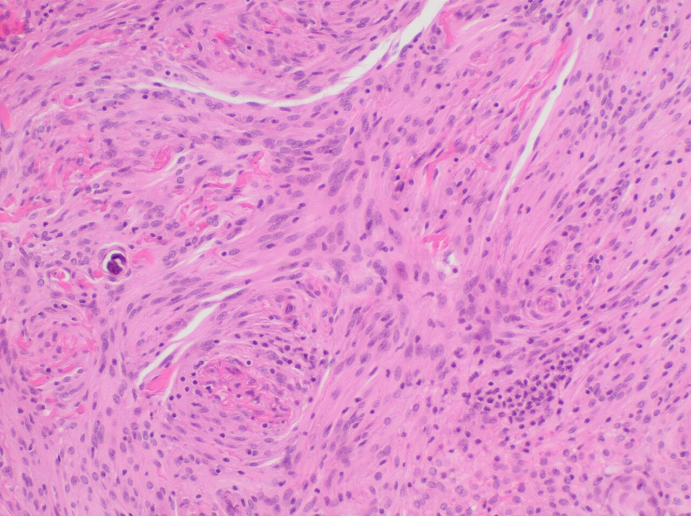
Meduloblastóm je embryonálny nádor mozočka detí (najčastejšie 2–8 rokov) a najčastejší zhubný nádor mozgu u detí. Vychádza obvykle z vermis a vrastá do IV. komory. Tvoria ho malé okrúhle modré bunky, niekedy s Homerovými-Wrightovými rozetami (Obr. 14.28); je vždy grade 4 a asi u tretiny detí sa už pri diagnóze šíri likvorom. Molekulovo sa delí na štyri skupiny podľa zapnutej dráhy (WNT, SHH, skupina 3 a 4) s celkom odlišnou prognózou – podľa nich sa volí intenzita liečby, aby sa deťom s dobrou prognózou ušetrili neskoré následky ožarovania.
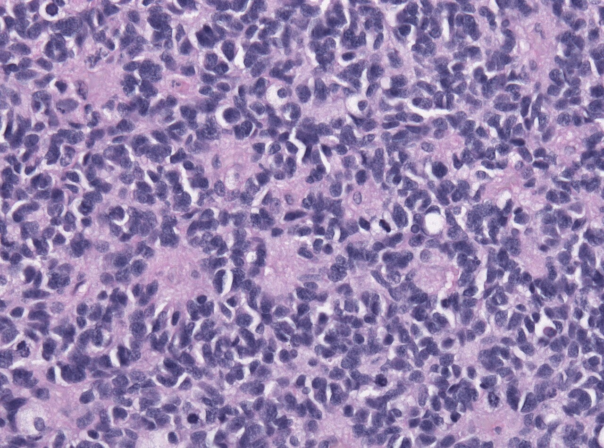
Ďalšie nádory sú zriedkavé: nádory plexus chorioideus – nezhubný papilóm (u detí v komorách, tvorí likvor a spôsobí hydrocefalus) a zhubný karcinóm plexus chorioideus; neurónové a gliovo-neurónové nádory (ganglioglióm, gangliocytóm, centrálny neurocytóm) – rastú pomaly, ale pacienta trápi epilepsia odolná na lieky; a primárny lymfóm CNS.
14.8Melanocytové nádory
Melanocyt je bunka lišty, ktorá sa v zárodku usadí v bazálnej vrstve epidermis (a v oku a mäkkých plenách) a tvorí melanín, ktorý odovzdáva okolitým keratinocytom ako ochranu proti UV žiareniu. Z melanocytov vznikajú dva protipóly: nezhubný névus a zhubný melanóm. Podrobne patria do patológie kože; tu ide o to, prečo bunka lišty dáva v koži taký pestrý rad nádorov a ako sa medzi nimi rozhoduje.
Névus = benígny nádor melanocytov v hniezdach; BRAF → krátke delenie → senescencia. Melanóm = ďalšie zásahy; radiálna fáza (epidermis) → vertikálna (invázia, metastázy). Prognóza podľa Breslowa; podozrenie dá ABCDE.
14.8.1Névus – benígny nádor melanocytov
V zdravej koži sú melanocyty jednotlivo medzi bazálnymi keratinocytmi. V pigmentovom (melanocytovom) névuse sa zmnožia a vytvoria hniezda – névové bunky (névocyty). Névy sa objavujú od 1. roka života do mladej dospelosti a prechádzajú vývojom, ktorý je zároveň ich delením:
| Typ | Kde sú hniezda | Ako vyzerá |
|---|---|---|
| junkčný | na rozhraní epidermis a dermis | plochá hnedá škvrna |
| zložený | na rozhraní aj v dermis (bunky „odkvapkávajú“ do dermis) | vyvýšený, hnedý |
| intradermálny | len v dermis | vyvýšený, farby kože – bunky v hĺbke tvoria málo pigmentu (Obr. 14.29) |
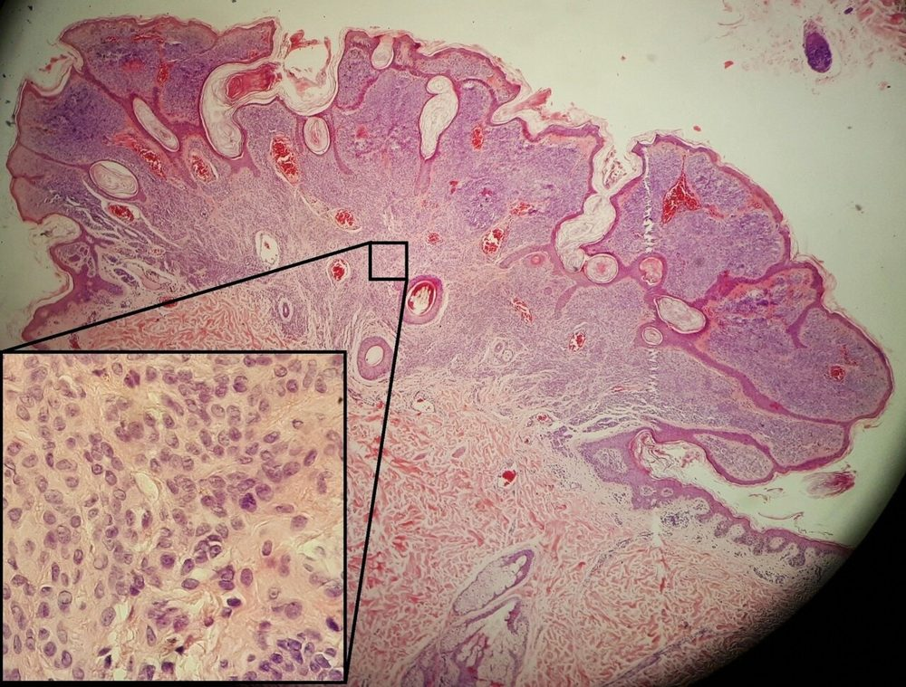
Kedysi sa pigmentové névy radili ku kožným hamartómom (slovo „névus“ pôvodne znamenalo vrodenú chybu kože). Dnes sa považujú za nezhubné nádory – sú klonálne a väčšina nesie aktivačnú mutáciu BRAF alebo NRAS.
aktivačná mutácia BRAF (najčastejšie V600E) → trvalo zapnutá dráha MAPK → melanocyt sa začne deliť → po krátkom období delenia zapne brzdy bunkového cyklu (p16) → senescencia – bunka žije, ale už sa nedelí → névus ostane malý a stabilný desaťročia
Rovnaká mutácia je aj v melanóme – rozdiel nie je v prvom zásahu, ale v tom, či bunka neskôr stratí brzdy (CDKN2A, PTEN, TP53, telomeráza).
Niektoré névy majú zvláštny význam. Dysplastický névus je väčší (> 5 mm), s nepravidelným okrajom a farbou, pod mikroskopom s atypiou hniezd aj buniek; malá časť z nich prejde do melanómu a ich veľký počet je znakom rizika. Kongenitálny névus je prítomný od narodenia (asi 1 % novorodencov); veľký (nad 20 cm) má vyššie riziko melanómu. Modrý névus leží hlboko v dermis a pigment presvitá namodro (krátke vlny svetla sa rozptýlia v hornej dermis – Tyndallov jav); Spitzovej névus u detí a mladých rýchlo rastie a pod mikroskopom môže napodobniť melanóm.
14.8.2Melanóm
Melanóm je zhubný nádor z melanocytov. Vzniká hlavne v koži, zriedka na slizniciach, v oku (uvea) alebo v mäkkých plenách. Väčšina vzniká de novo na kôži bez névu, menšina z dysplastického alebo veľkého kongenitálneho névu. Hlavným rizikom je UV žiarenie – najmä spálenie v detstve a prerušované intenzívne opaľovanie –, svetlá pleť, veľa névov, rodinný výskyt, imunosupresia a solárium. Melanocyty žijú dlho a UV v ich DNA zanecháva mutácie, takže genóm melanómu je nestabilný a nesie mutácií veľa.
- In situ: atypické melanocyty v epidermis jednotlivo aj v hniezdach, aj vo vyšších vrstvách (pagetoidné šírenie), bez prerazenia bazálnej membrány. Na kôži poškodenej slnkom u starších ľudí ako plochá nepravidelná škvrna na tvári – lentigo maligna.
- Radiálna (horizontálna) fáza: nádor sa šíri do strán v epidermis a plytko v papilárnej dermis; škvrna sa zväčšuje, mení tvar a farbu (Obr. 14.30). Bunky v tejto fáze nemetastázujú.
- Vertikálna fáza: objaví sa klon, ktorý rastie do hĺbky ako uzol v dermis (Obr. 14.31) – získa schopnosť metastázovať. Rozhoduje hrúbka nádoru.
- MI: atypické epiteloidné alebo vretenovité bunky s veľkými jadierkami, mitózy, pigment rôzne; IHC S100, SOX10, Melan-A, HMB-45.
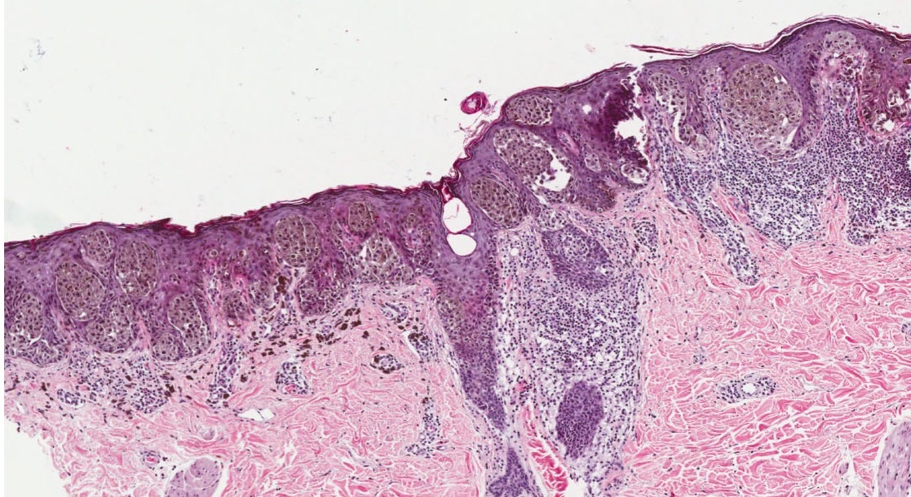
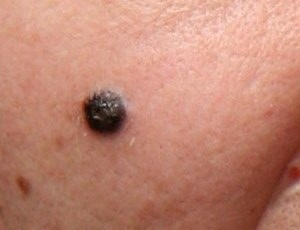
Podľa toho, ako dlho trvá radiálna fáza a kde nádor rastie, sú štyri hlavné klinické typy: povrchovo sa šíriaci melanóm (najčastejší, asi 70 %; chrbát, nohy – miesta opaľované prerušovane), nodulárny melanóm (asi 15 %; od začiatku vertikálny rast, preto najzradnejší), lentigo maligna melanóm (tvár starších, kôža trvalo vystavená slnku) a akrálny lentiginózny melanóm (asi 5 %; dlane, chodidlá, pod nechtom, nesúvisí s UV, častejší u ľudí s tmavou pleťou). WHO od roku 2018 delí melanómy podľa cesty vzniku – miery poškodenia kože slnkom a genetiky.
Znamienko, ktoré sa mení. Podozrenie na melanóm vzbudí ABCDE: Asymetria, nepravidelné ohraničenie (Border), viac farieb (Color), priemer nad 6 mm (Diameter), vývoj v čase (Evolution). Podozrivá lézia sa celá vyreže; patológ zmeria hrúbku podľa Breslowa a ulceráciu (→ 11.7.3 Od TNM k štádiu) – podľa nich sa rozhodne o biopsii sentinelovej uzliny a o liečbe.
Melanóm metastázuje lymfou aj krvou prakticky kamkoľvek (koža, uzliny, pľúca, pečeň, mozog) a typické sú aj neskoré metastázy po rokoch (→ 11.4.4 Spiace bunky a čas). Pri metastatickom melanóme sa vyšetruje mutácia BRAF: ak je prítomná, zaberajú inhibítory BRAF a MEK – dôkaz, že nádor stojí na tej istej dráhe ako névus. Imunoterapia uvoľnením bŕzd T-lymfocytov (→ 10.5 Čo sa v bunke pokazí) zmenila metastatický melanóm z choroby s prežitím niekoľkých mesiacov na chorobu, pri ktorej časť pacientov žije roky.
14.9Neuroendokrinné neoplázie
Neuroendokrinné neoplázie (NEN) sú nádory z buniek, ktoré majú neuroendokrinný program: hormón alebo amín skladujú v granulách a uvoľňujú ho do okolia alebo krvi, a zároveň nesú bielkoviny, aké má neurón v synapse. Väčšina NEN vzniká v tráviacej rúre a pankrease, ďalej v pľúcach a v koži. Zo všetkých otázok, ktoré si patológ pri NEN kladie, je jedna hlavná – či je nádor dobre, alebo slabo diferencovaný; od nej sa odvíja meno, genetika, liečba aj prognóza. Ďalšie otázky sú grade, miesto vzniku a funkcia (syndróm z hormónu).
NE bunka = chromogranín + synaptofyzín + SSTR. NET (dobre diferencovaný, G1–G3, MEN1/DAXX/ATRX) × NEC (slabo, malo- či veľkobunkový, TP53/RB1) – dve choroby, takmer vždy zhubné. Karcinoidový syndróm = serotonín, ktorý obíde pečeň.
14.9.1Neuroendokrinná bunka a jej program
Neuroendokrinné bunky netvoria kompaktné žľazy (výnimkou sú Langerhansove ostrovčeky pankreasu); sú roztrúsené jednotlivo medzi bunkami sliznice tráviacej rúry a dýchacích ciest a v koži (Merkelove bunky). Spolu tvoria difúzny neuroendokrinný systém (staršie „systém APUD“, → 14.1). Každá bunka reaguje na podnet z okolia – natiahnutie, kyselinu, potravu – a odpovedá uvoľnením svojho produktu: enterochromafinné bunky čreva serotonín, G-bunky antra gastrín, B-bunky ostrovčekov inzulín, A-bunky glukagón, D-bunky somatostatín.
Program bunky sa dá dokázať tromi skupinami bielkovín, a práve ich spojenie robí bunku „neuroendokrinnou“:
| Čo bunka má | Bielkovina | Ako sa využije |
|---|---|---|
| granuly s hustým jadrom (zásobníky hormónu) | chromogranín A | IHC (Obr. 14.33); hladina v sére pri sledovaní choroby |
| malé vezikuly ako v synapse | synaptofyzín | IHC – najcitlivejší marker (Obr. 14.32) |
| jadrový program | INSM1 (transkripčný faktor) | IHC, jadrové farbenie |
| somatostatínové receptory (SSTR 1–5) na povrchu | SSTR2 | zobrazenie (PET s analógom somatostatínu), liečba (analógy, rádionuklidy) |
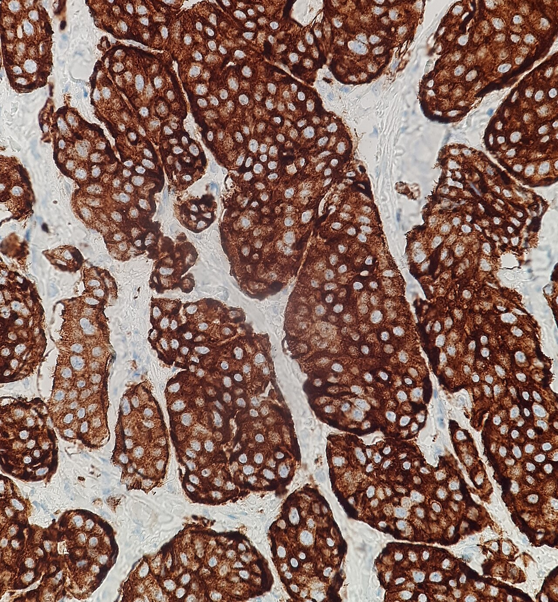
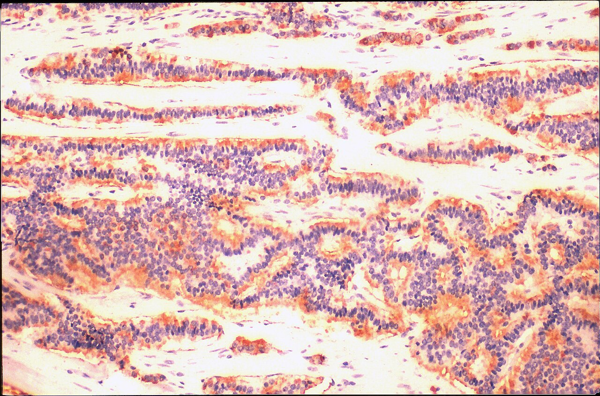
dobre diferencovaná NE bunka nesie SSTR2 → analóg somatostatínu (oktreotid, lanreotid) sa naň naviaže → v bunke klesne cAMP → menej sa uvoľní hormón (ústup syndrómu) a bunka sa pomalšie delí → ten istý analóg označený rádionuklidom (gálium-68) zobrazí ložiská pri PET → s lutéciom-177 (PRRT) ožiari nádor zvnútra
Liečba je dôkazom programu: zaberá len na nádor, ktorý receptor má – teda na NET, nie na NEC.
14.9.2NET a NEC: dve rôzne choroby
Diferenciácia tu znamená to isté ako inde – ako veľmi sa nádor podobá zdravému tkanivu (→ 11.2 Diferenciácia) –, ale pri NEN rozdelí nádory na dve skupiny, ktoré sa líšia už od prvej mutácie:
| NET – neuroendokrinný nádor | NEC – neuroendokrinný karcinóm | |
|---|---|---|
| diferenciácia | dobre diferencovaný | slabo diferencovaný |
| obraz | pravidelné bunky v hniezdach, trámcoch, žliazkach; jadrá s jemným zrnitým chromatínom („soľ a korenie“), málo mitóz | malobunkový (drobné bunky, jadrá bez jadierok, nekrózy) alebo veľkobunkový typ; veľa mitóz |
| grade | G1, G2, aj G3 | vždy high-grade (G3) |
| genetika | MEN1, DAXX, ATRX (pankreas), dráha mTOR | TP53 a RB1, ako pri malobunkovom karcinóme pľúc |
| funkcia | často hormonálne syndrómy | syndrómy z hormónu zriedka |
| liečba | analógy somatostatínu, inhibítory mTOR a VEGF, PRRT, alkylačné cytostatiká, resekcia aj pečeňových metastáz | chemoterapia na báze platiny (s etopozidom) |
| prognóza | rast často roky („rakovina v spomalenom zábere“), ale metastázuje | rýchly rast, zlá prognóza |
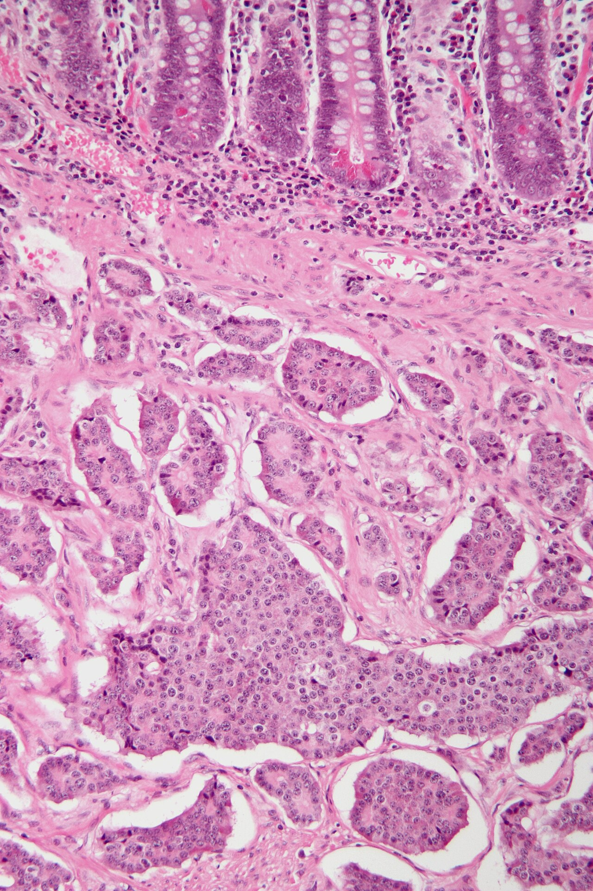
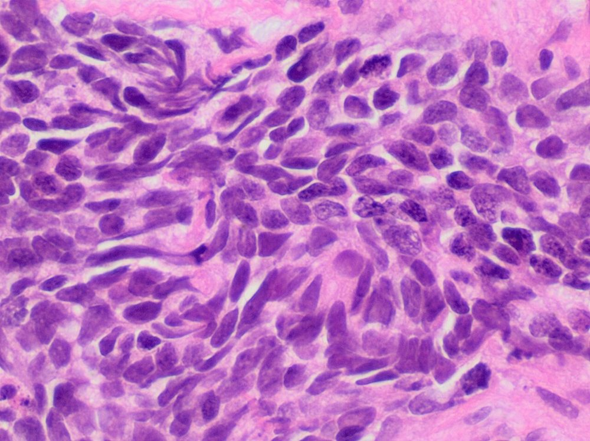
NET G3 nie je NEC. Dobre diferencovaný nádor môže mať Ki-67 nad 20 %, a predsa je to NET – má jeho genetiku, receptor SSTR a lepšiu prognózu a lieči sa inak. O skupine rozhoduje diferenciácia a genetika (napr. strata RB a aberantný p53 pri NEC), nie samotné číslo Ki-67.
Pri časti NET pankreasu sa našli aj zárodočné mutácie opravných génov DNA (MUTYH, CHEK2, BRCA2), hoci pacienti nemali rodinnú záťaž; spolu s MEN1 a VHL ich má asi pätina pacientov. Časté somatické zmeny zapínajú dráhu mTOR, čo vysvetľuje, prečo pri NET účinkuje inhibítor mTOR (everolimus).
Kedysi sa tieto nádory volali karcinoid („podobný karcinómu“; opísané v 19. storočí) s predstavou, že sú to mierne, takmer nezhubné nádory; pre nádory pankreasu sa používali mená nádor z ostrovčekových buniek, nesidióm, nesidioblastóm či apudóm. Dnes sa celá skupina volá neuroendokrinné neoplázie a takmer všetky sa považujú za zhubné – aj malý NET môže metastázovať a potenciál agresívneho správania je pri porovnateľnom rozsahu podobný karcinómom. Slovo karcinoid ostalo v pľúcach a týmuse (typický a atypický karcinoid) a v názve karcinoidového syndrómu (→ 10.4.3 Názvy, ktoré klamú).
14.9.3Grading a zmiešané nádory
Grade NET sa určuje z dvoch údajov, ktoré merajú rýchlosť delenia: počet mitóz na 2 mm² a index Ki-67 (podiel buniek v cykle, → 11.6.2 Systémy gradingu). Pri nezhode platí vyšší stupeň:
| Kategória | Mitózy / 2 mm² | Ki-67 | Diferenciácia |
|---|---|---|---|
| NET G1 | < 2 | < 3 % | dobre |
| NET G2 | 2–20 | 3–20 % | dobre |
| NET G3 | > 20 | > 20 % | dobre |
| NEC (malobunkový – SCNEC, veľkobunkový – LCNEC) | > 20 | > 20 % | slabo |
| MiNEN | podľa zložiek | podľa zložiek | zmiešaný |
MiNEN (zmiešaný neuroendokrinný-neneuroendokrinný nádor) obsahuje v jednom nádore neuroendokrinnú zložku (NET alebo NEC) a inú zložku – najčastejšie adenokarcinóm; každá musí tvoriť aspoň 30 % nádoru (→ 12.8 Keď diferenciácia zmizne alebo sa rozdvojí).
WHO v roku 2018 navrhla spoločnú klasifikáciu NEN pre všetky orgány – rovnaké rozdelenie NET × NEC a rovnaké stupne (napríklad NET pankreasu, PanNET, G1–G3). V pľúcach sa však zachovali tradičné mená: typický karcinoid zodpovedá NET G1, atypický karcinoid NET G2 a slabo diferencované nádory sú malobunkový karcinóm pľúc a veľkobunkový neuroendokrinný karcinóm (LCNEC). Rovnaký rámec platí aj v maternici a krčku maternice.
14.9.4Miesto vzniku určuje obraz
Asi 85 % NEN vzniká v tráviacej rúre a pankrease (gastroenteropankreatické NEN). Ich výskyt stúpa – čiastočne preto, že sa viac endoskopuje a zobrazuje. Najčastejšie sú v tenkom čreve (ileum), apendixe a rekte. Tradične sa delia podľa embryonálneho čreva, z ktorého orgán vzniká, lebo s miestom sa mení typ bunky, produkt aj správanie:
| Oblasť | Orgány | Typický nádor a produkt | Správanie |
|---|---|---|---|
| predné črevo (foregut) | žalúdok, duodénum, pankreas (aj pľúca a týmus) | rôzne hormóny: gastrín, inzulín, glukagón, somatostatín | pestré; funkčné syndrómy z pankreasu a duodéna |
| stredné črevo (midgut) | jejúnum, ileum, slepé črevo, apendix, vzostupný tračník | serotonín z enterochromafinných buniek | metastázy do uzlín a pečene → karcinoidový syndróm |
| zadné črevo (hindgut) | zvyšok hrubého čreva, rektum | väčšinou nemé | NET rekta malý, často náhodný nález |
- MA: malý, tuhý, žltkastý uzlík pod sliznicou, často mnohopočetný; okolo nádoru a v mezentériu výrazná fibróza, ktorá kľučky zalomí a stiahne – serotonín a rastové faktory nádoru dráždia fibroblasty. Uzliny v mezentériu bývajú väčšie ako primárny nádor.
- MI – malé zväčšenie: sliznica nad nádorom je zachovaná, hniezda nádoru vypĺňajú podslizničné väzivo a prerastajú svalovinou (Obr. 14.36) – nádor vzniká z buniek v hĺbke krýpt a rastie pod povrchom.
- MI – veľké zväčšenie: hniezda pravidelných buniek s jemným chromatínom a ružovou zrnitou cytoplazmou, na obvode hniezd palisáda buniek (Obr. 14.34).
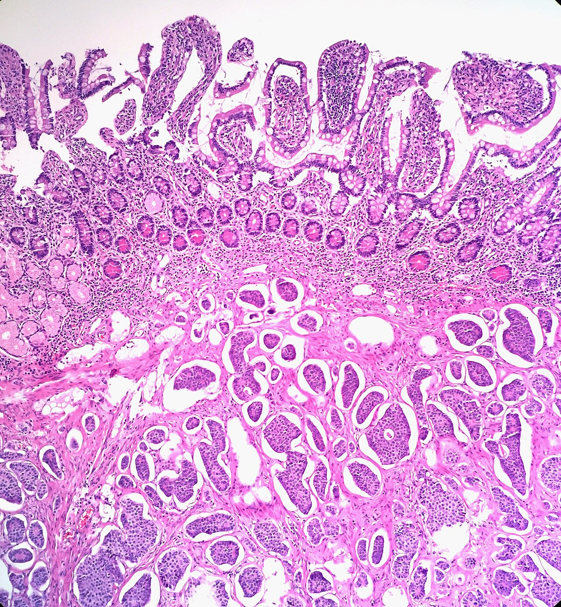
Niektoré miesta majú vlastné pravidlá. Žalúdok: NET z ECL buniek vznikajú pri dlhodobom nadbytku gastrínu (autoimunitná atrofická gastritída, gastrinóm) – gastrín poháňa delenie ECL buniek, ktoré tvoria histamín; sú malé, mnohopočetné a majú dobrú prognózu. Apendix: väčšina NET je náhodný nález po apendektómii a má priaznivý priebeh. Pečeň: NEN v pečeni je takmer vždy metastáza z tráviacej rúry, nie primárny nádor. A aj malý NET môže metastázovať – veľkosť chráni menej ako pri iných nádoroch.
V pľúcach sú dva protipóly. Na jednej strane karcinoidy (asi 2 % nádorov pľúc) – často v centrálnych prieduškách, kde uzavrú priesvit a spôsobia opakované zápaly pľúc; atypický karcinoid súvisí s fajčením, typický menej. Na druhom póle stojí malobunkový karcinóm pľúc – NEC fajčiarov, ktorý tvorí asi 15 % nádorov pľúc. Rastie tak rýchlo, že väčšina pacientov má v čase diagnózy metastázy, a jeho bunky si z neuroendokrinného programu ponechajú schopnosť tvoriť peptidy a niesť nervové antigény – preto je najčastejším zdrojom paraneoplastických syndrómov, hormonálnych aj neurologických (→ 11.8.3 Paraneoplastické syndrómy).
- MA: sivobiela hmota pri hile s veľkými metastázami v mediastinálnych uzlinách, nekrózy a krvácanie.
- MI: drobné bunky s minimom cytoplazmy, jadrá s jemne zrnitým chromatínom bez jadierok, ktoré sa navzájom tlačia a otláčajú; veľa mitóz a nekróz (Obr. 14.35). Bunky sú krehké a pri odbere sa drvia – artefakt drvenia; z rozpadnutých jadier sa DNA usadí v stenách ciev (Azzopardiho jav).
Na koži vzniká karcinóm z Merkelových buniek – vysoko agresívny NEC, najčastejšie na koži hlavy a krku starších ľudí ako rýchlo rastúci červenofialový uzol; na reze je belavý, mäsitý, s krvácaním (Obr. 14.37). Vo väčšine nádorov je do genómu začlenená DNA polyomavírusu Merkelových buniek (MCPyV); ostatné vznikajú poškodením UV žiarením s množstvom mutácií. Riziko zvyšuje vek, slnko a imunosupresia (transplantácia, HIV). Pod mikroskopom sú to malé okrúhle modré bunky (Obr. 14.38); od metastázy malobunkového karcinómu pľúc ich odlíši CK20 (bodkovito pri jadre) a negatívny TTF-1.
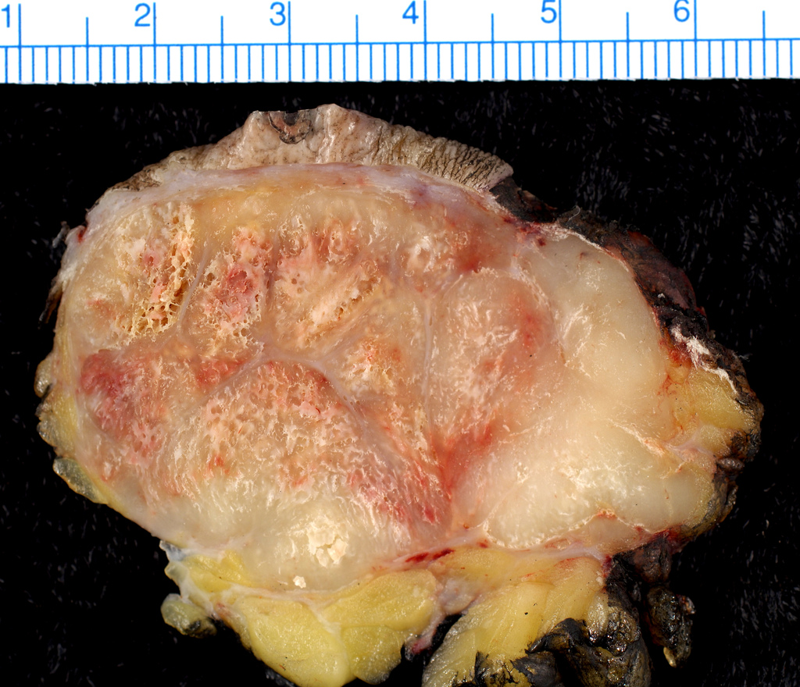
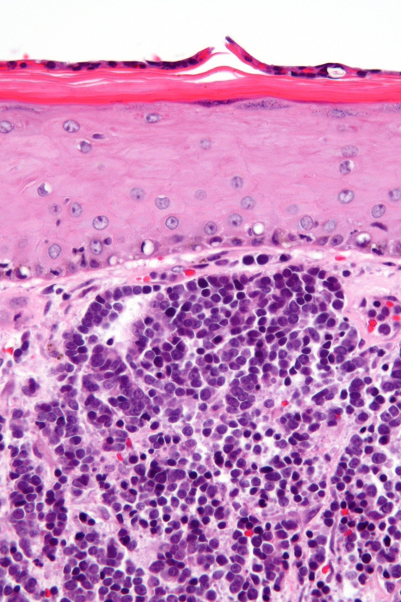
14.9.5Funkčné syndrómy
Funkčne aktívny NET nadmerne tvorí svoj produkt a vyvolá syndróm; nemý NET sa prejaví až rastom alebo metastázami. Meno podľa hormónu (gastrinóm, inzulinóm, glukagonóm) sa používa len vtedy, keď má pacient syndróm; inak sa píše „NET, ktorý tvorí gastrín“ – v bunkách môže byť hormón dokázaný imunohistochémiou, a predsa ho nádor nevylieva v množstve, ktoré by vyvolalo príznaky.
NET stredného čreva tvorí serotonín (a kiníny, histamín, prostaglandíny) → z primárneho nádoru odteká krv vrátnicou do pečene, ktorá amíny rozloží (monoaminooxidáza) → bez príznakov → nádor metastázuje do pečene → metastázy vylievajú serotonín do pečeňových žíl, teda priamo do veľkého obehu → návaly začervenania (flush), hnačky, bronchospazmus → serotonín v pravom srdci → fibroblasty endokardu tvoria väzivové plaky → karcinoidové srdce
Pľúca serotonín rozložia, preto plaky postihujú trikuspidálnu a pulmonálnu chlopňu (nedomykavosť, stenóza) a ľavé srdce šetria – postihnuté býva len pri skrate zľava doprava alebo pri primárnom nádore v pľúcach. Tryptofán sa míňa na serotonín, a preto môže chýbať niacín – pelagra. Syndróm sa potvrdí zvýšenou kyselinou 5-hydroxyindoloctovou (5-HIAA) v moči; pri anestézii hrozí karcinoidová kríza, ktorej sa predchádza oktreotidom.
Syndrómy z NET pankreasu a duodéna vyplývajú z toho, akú bunku nádor napodobní:
| Nádor | Bunka a hormón | Syndróm | Čo je typické |
|---|---|---|---|
| inzulinóm | B-bunka – inzulín | hypoglykémia nalačno a pri námahe: zmätenosť, poruchy vedomia, potenie a búšenie srdca (protiregulácia); Whippleova trias | najčastejší funkčný NET pankreasu; väčšinou < 2 cm, solitárny, metastázy len asi v 10 %; v stróme amyloid z amylínu (Obr. 14.39) |
| gastrinóm | G-bunka – gastrín | Zollingerov-Ellisonov syndróm: nadbytok kyseliny → mnohopočetné peptické vredy aj na neobvyklých miestach (jejúnum), hnačka | častejšie v duodéne ako v pankrease (trojuholník gastrinómu); viac ako polovica pri diagnóze rozšírená; časť pri MEN1 |
| VIPóm | VIP | vodnaté hnačky, hypokaliémia, chýbanie kyseliny v žalúdku (WDHA) | sekrečná hnačka aj nalačno |
| glukagonóm | A-bunka – glukagón | migrujúci nekrolytický erytém, cukrovka, chudnutie | bývajú veľké, často metastázujú |
| somatostatinóm | D-bunka – somatostatín | cukrovka, žlčové kamene, steatorea (brzdí sekréciu) | duodénum pri NF1 |
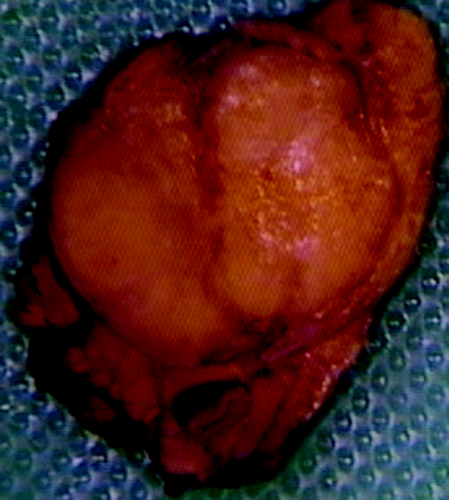
Hypoglykémia bez cukrovky. Opakované stavy zmätenosti alebo bezvedomia nalačno či po námahe, ktoré ustúpia po podaní glukózy (Whippleova trias), pri nízkej glykémii a súčasne vysokom inzulíne a C-peptide dokazujú vlastnú tvorbu inzulínu – najčastejšie inzulinóm. Nádor je malý, hľadá sa endosonograficky, a jeho odstránenie pacienta vylieči.
Časť NET vzniká pri dedičnom syndróme MEN1 – zárodočnej mutácii supresorového génu MEN1 (bielkovina menín). Postihuje „tri P“: prištítne telieska (hyperplázia, adenóm → hyperparatyreóza), pankreas a duodénum (NET, najmä gastrinómy) a hypofýzu (adenóm). Pri MEN2 (onkogén RET) je naopak typický medulárny karcinóm štítnej žľazy a feochromocytóm (→ 14.4.4).
Čo patológ napíše do správy NEN. Typ (NET × NEC × MiNEN), grade (mitózy na 2 mm² a Ki-67), miesto, veľkosť, hĺbku a staging (TNM pre daný orgán), cievnu inváziu a okraje; pri metastáze neznámeho pôvodu transkripčné faktory, ktoré prezradia orgán. Z typu a gradu vyplýva, či liečba stavia na analógoch somatostatínu a PRRT, alebo na chemoterapii s platinou.
14.10Súhrn a rýchle rozlíšenie
| Otázka | Odpoveď | Kde |
|---|---|---|
| Odkiaľ sú neuroektodermové nádory? | z nervovej trubice (CNS) a z nervovej lišty (obaly nervov, neuroblasty, chromafinné bunky, melanocyty); NEN sa pripájajú podľa programu bunky | 14.1 |
| Ako sa prezradí línia? | S100/SOX10 (Schwann, melanocyt), synaptofyzín a chromogranín (NE bunka), GFAP (glia) | 14.2.1 |
| Schwannóm × neurofibróm? | okraj nervu, puzdro, Antoni A/B, Verocay, nezhubne × vnútri nervu, zmes buniek, plexiformný pri NF1 → MPNST | 14.5 |
| Čo je MPNST? | high-grade sarkóm z neurofibrómu alebo de novo; polovica pri NF1; S100 len ložiskovo | 14.5.3 |
| NF1 × NF2-SWN? | 17q11.2, neurofibromín – RAS, kávové škvrny, neurofibrómy, Lischove uzlíky × 22q12, merlín, obojstranné vestibulárne schwannómy | 14.6 |
| Čo rozhodne o neuroblastóme? | vek, štádium, vyzretie, amplifikácia MYCN; od spontánnej regresie po vysoké riziko | 14.3.1 |
| Neuroblastóm → ganglioneuróm? | dozrievanie neuroblastov na gangliové bunky v Schwannovej stróme; zhubnosť klesá | 14.3.2 |
| Feochromocytóm? | paraganglióm nadobličky, katecholamíny, záchvatová hypertenzia, metanefríny; tretina dedičná; benígny × malígny neplatí | 14.4 |
| Névus × melanóm? | BRAF → senescencia × ďalšie zásahy; radiálna → vertikálna fáza; Breslow, ABCDE | 14.8 |
| Čím sú iné nádory CNS? | poloha a tlak, likvor, grade v rámci typu, integrovaná diagnóza; edém ⟳ herniácia | 14.7 |
| NET × NEC? | dobre × slabo diferencovaný; MEN1/DAXX/ATRX × TP53/RB1; SSTR a analógy × platina | 14.9.2 |
| Prečo karcinoidový syndróm až pri metastázach? | pečeň rozloží serotonín z vrátnice; metastázy ho vylievajú priamo do obehu | 14.9.5 |
14.11Otázky na zopakovanie
Prečo môže nádor z buniek nervovej lišty vzniknúť v nadobličke, v koži aj v stene čreva, kým nádory z nervovej trubice ostávajú v lebke a miešnom kanáli?
Bunky lišty sa v zárodku uvoľnia z epitelu a putujú celým telom – usadia sa ako chromafinné bunky drene nadobličky, melanocyty v koži, neuróny a Schwannove bunky periférnych a autonómnych nervov. Nádor vznikne tam, kde bunka dozrela. Bunky nervovej trubice tvoria mozog a miechu a ich nádory takmer nemetastázujú mimo CNS. → 14.1 Neuroektoderm a jeho nádoryChirurg odstránil uzol z nervu predlaktia bez prerušenia nervu. Patológ vidí opuzdrený nádor s hustými a riedkymi oblasťami a palisádami jadier. Čo to je a prečo sa nádor dal odstrániť šetrne?
Schwannóm: Antoni A a B oblasti, Verocayove telieska, S100+ a SOX10+. Rastie excentricky na okraji nervu a má puzdro, takže vlákna nervu po ňom len prebiehajú. Neurofibróm by rástol vnútri nervu a vlákna by ním prechádzali. → 14.5.1 Schwannóm – prototyp, → 14.5.2Pacient s NF1 má plexiformný neurofibróm stehna, ktorý za pár mesiacov narástol a začal bolieť. Na čo treba myslieť a aký je mechanizmus?
Na premenu na MPNST. V bunkách neurofibrómu chýba neurofibromín (oba zásahy NF1) a RAS je trvalo zapnutý; ďalšie zásahy (CDKN2A, gény PRC2) zmenia nádor na high-grade sarkóm, ktorý stratí Schwannov program. Treba zobrazenie a biopsiu z najaktívnejšej časti. → 14.5.3 MPNST, → 14.6.1 Neurofibromatóza 1. typuAko vysvetlíš modelom dvoch zásahov, prečo sa pri NF1 neurofibrómy objavujú postupne a na rôznych miestach, hoci mutáciu má pacient v každej bunke? Spoj s kap. 10.
Pacient zdedí jednu poškodenú alelu supresorového génu NF1; jedna funkčná alela stačí. Nádor vznikne až v bunke, v ktorej náhodná somatická mutácia zasiahne aj druhú alelu – to sa deje v rôznom čase a v rôznych bunkách. → 10.5.3 Supresorové gény, → 14.6.1Dojča má v nadobličke nádor z malých okrúhlych buniek a metastázy v koži a pečeni, ale nie v kostiach; MYCN nie je amplifikovaný. Prečo lekári zvažujú len sledovanie?
Ide o neuroblastóm štádia MS u dojčaťa do 18 mesiacov – nádory tejto skupiny si často zachovajú program dozrievania a apoptózy a samy ustúpia. Bez amplifikácie MYCN chýba hlavný motor delenia. Starší vek, kostné metastázy a amplifikácia MYCN by naopak znamenali vysoké riziko. → 14.3.1 NeuroblastómPrečo sa pred operáciou feochromocytómu podáva najprv blokátor α a až potom β, a prečo sa na diagnózu merajú metanefríny, nie len katecholamíny?
Katecholamíny sťahujú arterioly cez α₁; samotný β-blokátor by zrušil β₂ rozšírenie ciev a nechal neutlmenú vazokonstrikciu → hypertenzná kríza. Katecholamíny sa vylievajú len v záchvatoch, ale v nádore sa sústavne menia na metanefríny, ktorých hladina je zvýšená aj medzi záchvatmi. → 14.4.2 FeochromocytómPatológ nevie podľa vzhľadu povedať, či odstránený feochromocytóm bude metastázovať. Čo mu pomôže a čo pacientovi odporučí?
Feochromocytómy sa nedelia na benígne a malígne; isté je len to, že nádor metastázoval (uzliny, kosti). Riziko pomôže odhadnúť skóre PASS/GAPP, veľkosť a strata SDHB v IHC (dedičná porucha SDHx, vyššie riziko). Keďže asi tretina je dedičných, odporučí genetické vyšetrenie a dlhodobé sledovanie. → 14.4.4 Dedičnosť a správaniePrečo môže nízkostupňový nádor mozgu zabiť, hoci nemetastázuje? Opíš bludný kruh a bod zvratu.
Lebka sa nedá roztiahnuť. Nádor a vazogénny edém z ciev s porušenou bariérou zvyšujú intrakraniálny tlak, ten znižuje perfúzny tlak mozgu → ischémia → ďalší edém ⟳. Bodom zvratu je herniácia a útlak kmeňa. Kortikoidy zmenšia edém, resekcia odstráni príčinu. → 14.7.1 Čím sú nádory CNS inéPacient má roky NET ilea bez príznakov; po zistení metastáz v pečeni začne mať návaly začervenania, hnačky a šelest nad trikuspidálnou chlopňou. Vysvetli.
Serotonín z primárneho nádoru odteká vrátnicou do pečene a tá ho rozloží. Metastázy v pečeni ho vylievajú priamo do pečeňových žíl a veľkého obehu → karcinoidový syndróm; v pravom srdci serotonín podnieti tvorbu väzivových plakov na chlopniach (karcinoidové srdce), pľúca ho rozložia, preto ľavé srdce ostáva ušetrené. Diagnózu potvrdí 5-HIAA v moči. → 14.9.5 Funkčné syndrómyNET pankreasu a malobunkový karcinóm pľúc sú oba „neuroendokrinné“ a oba synaptofyzín+. Prečo sa liečia celkom inak?
NET je dobre diferencovaný (genetika MEN1, DAXX, ATRX, dráha mTOR) a nesie SSTR – zaberajú analógy somatostatínu, inhibítory mTOR a PRRT. Malobunkový karcinóm je NEC – slabo diferencovaný, so stratou TP53 a RB1, rýchlo rastie a odpovedá na chemoterapiu s platinou. Spoločný program bunky neznamená spoločnú chorobu. → 14.9.2 NET a NEC
14.12Zdroje
- Zámečník J. a kol.: Patologie, 2. vyd., Praha: LD Prager Publishing, 2024 (kap. 13 Neuroendokrinní nádory, s. 231–233; kap. 16 Neuroektodermální nádory, s. 257–262; kap. 26 – neuroendokrinní nádory plic, s. 433–434; kap. 29 – neuroendokrinní nádory GIT, s. 514–515; kap. 31 – funkční nádory pankreatu, s. 564; kap. 37 – nádory CNS, s. 709–714; kap. 40 – nádory dřeně nadledvin, s. 769–771; kap. 42 – Merkelův karcinom a melanocytární léze, s. 807–811; kap. 44 – neuroblastom, s. 830–831). ISBN 978-80-11-04919-5.
- Rindi G., Mete O., Uccella S. et al.: Overview of the 2022 WHO Classification of Neuroendocrine Neoplasms. Endocr Pathol 2022;33:115–154. doi:10.1007/s12022-022-09708-2 (abstrakt)
- Rindi G., Klimstra D. S., Abedi-Ardekani B. et al.: A common classification framework for neuroendocrine neoplasms: an International Agency for Research on Cancer (IARC) and World Health Organization (WHO) expert consensus proposal. Mod Pathol 2018;31:1770–1786. doi:10.1038/s41379-018-0110-y (abstrakt)
- Mete O., Asa S. L., Gill A. J. et al.: Overview of the 2022 WHO Classification of Paragangliomas and Pheochromocytomas. Endocr Pathol 2022;33:90–114. doi:10.1007/s12022-022-09704-6 (abstrakt)
- Louis D. N., Perry A., Wesseling P. et al.: The 2021 WHO Classification of Tumors of the Central Nervous System: a summary. Neuro Oncol 2021;23:1231–1251. doi:10.1093/neuonc/noab106 (abstrakt)
- Louis D. N., Perry A., Reifenberger G. et al.: The 2016 World Health Organization Classification of Tumors of the Central Nervous System: a summary. Acta Neuropathol 2016;131:803–820. doi:10.1007/s00401-016-1545-1 (abstrakt)
- Legius E., Messiaen L., Wolkenstein P. et al.: Revised diagnostic criteria for neurofibromatosis type 1 and Legius syndrome: an international consensus recommendation. Genet Med 2021;23:1506–1513. doi:10.1038/s41436-021-01170-5 (abstrakt)
- Plotkin S. R., Messiaen L., Legius E. et al.: Updated diagnostic criteria and nomenclature for neurofibromatosis type 2 and schwannomatosis: An international consensus recommendation. Genet Med 2022;24:1967–1977. doi:10.1016/j.gim.2022.05.007 (abstrakt)
- Elder D. E., Bastian B. C., Cree I. A. et al.: The 2018 World Health Organization Classification of Cutaneous, Mucosal, and Uveal Melanoma. Arch Pathol Lab Med 2020;144:500–522. doi:10.5858/arpa.2019-0561-RA (abstrakt)
- Monclair T., Brodeur G. M., Ambros P. F. et al.: The International Neuroblastoma Risk Group (INRG) staging system: an INRG Task Force report. J Clin Oncol 2009;27:298–303. doi:10.1200/JCO.2008.16.6876 (abstrakt)
- Johansson E., Andersson L., Örnros J. et al.: Revising the embryonic origin of thyroid C cells in mice and humans. Development 2015;142:3519–3528. doi:10.1242/dev.126581
- Scarpa A., Chang D. K., Nones K. et al.: Whole-genome landscape of pancreatic neuroendocrine tumours. Nature 2017;543:65–71. doi:10.1038/nature21063 (abstrakt)
- Feng H., Shuda M., Chang Y., Moore P. S.: Clonal integration of a polyomavirus in human Merkel cell carcinoma. Science 2008;319:1096–1100. doi:10.1126/science.1152586 (abstrakt)
- Pemov A., Li H., Presley W. et al.: Genetics of human malignant peripheral nerve sheath tumors. Neurooncol Adv 2020;2:i50–i61. doi:10.1093/noajnl/vdz049 (abstrakt)
- Xiao K., Yang K., Hirbe A. C.: A Sequencing Overview of Malignant Peripheral Nerve Sheath Tumors: Findings and Implications for Treatment. Cancers 2025;17:180. doi:10.3390/cancers17020180 (abstrakt)
- Lemonick M. B., Venigalla S., Nguyen K. V. et al.: Malignant melanotic nerve sheath tumor mimicking a benign nerve sheath lesion: illustrative case. J Neurosurg Case Lessons 2025;10:CASE25314. doi:10.3171/CASE25314 (abstrakt)
- Madesh M., Pericherla S., Chindhalore S.: Intracranial malignant melanotic nerve sheath tumor: illustrative case. J Neurosurg Case Lessons 2025;9:CASE24473. doi:10.3171/CASE24473 (abstrakt)
- StatPearls (NCBI Bookshelf; kapitoly čítané cez Europe PMC, stav 26. 11. 2026): Schwannoma · Neurofibroma · Neurofibromatosis Type 1 · Neurofibromatosis Type 2 · Granular Cell Tumor · Neuroanatomy, Neural Crest · Neuroblastoma · Ewing Sarcoma · Pheochromocytoma · Paraganglioma · Carcinoid Syndrome · Gastrointestinal Neuroendocrine Tumors · Neuroendocrine Tumor 177Lutetium-Dotatate Therapy · Insulinoma · Gastrinoma · Small Cell Lung Cancer · Merkel Cell Carcinoma of the Skin · Glioblastoma Multiforme · Medulloblastoma · Meningioma
Autor, licencia a odkaz na zdroj sú pri každom obrázku; súhrn je v registri ZDROJE-OBRAZKOV.md. Obr. 14.1 a 14.20 sú vlastné schémy (CC BY-NC-SA 4.0).
Pokračuje v: → 15 Prekancerózy